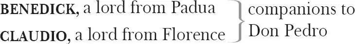
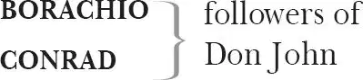

Much Ado About Nothing 1
DON PEDRO, Prince of Aragon

BALTHASAR, a singer, attendant upon Don Pedro
A BOY, servant to Benedict
DON JOHN, illegitimate brother of Don Pedro

LEONATO, governor of Messina
Innogen, his silent wife
HERO, his daughter
BEATRICE, his niece, an orphan
ANTONIO, an old man, brother of Leonato
FRIAR FRANCIS
DOGBERRY, Constable in charge of the Watch
VERGES, Headborough 2 accompanying Dogberry
A SEXTON
WATCHMEN
Attendants and Messengers
Act 1
Scene 1 3 ／ running scene 1
Enter Leonato Governor of Messina, Innogen 4 his wife, Hero 5 his daughter and Beatrice 6 his niece, with a Messenger
LEONATO I learn in this letter that Don Peter 7 of Arago 8 n comes this night to Messina.
Shows a letter
MESSENGER He is very near by this: he was not three leagues 9 off when I left him.
LEONATO How many gentlemen have you lost in this action 10 ?
MESSENGER But few of any sort 11 , and none of name 12 .
LEONATO A victory is twice itself when the achiever brings home full numbers. I find here that Don Peter hath bestowed much honour on a young Florentine 13 called Claudio.
MESSENGER Much deserved on his part and equally remembered 14 by Don Pedro. He hath borne himself beyond the promise of his age, doing in the figure 15 of a lamb the feats of a lion. He hath indeed better bettered expectation than you must expect of me to tell you how.
LEONATO He hath an uncle here in Messina will be very much glad of it.
MESSENGER I have already delivered him letters, and there appears much joy in him, even so much that joy could not show itself modest enough without a badge of bitterness 16 .
LEONATO Did he break out into tears?
MESSENGER In great measure.
LEONATO A kind 17 overflow of kindness. There are no faces truer 18 than those that are so washed. How much better is it to weep at joy than to joy at weeping!
BEATRICE I pray you, is Signior Mountanto 19 returned from the wars or no?
MESSENGER I know none of that name, lady: there was none such in the army of any sort.
LEONATO What is he that you ask for, niece?
HERO My cousin means Signior Benedick 20 of Padua 21 .
MESSENGER O, he's returned, and as pleasant 22 as ever he was.
BEATRICE He set up his bills 23 here in Messina and challenged Cupid 24 at the flight 25 : and my uncle's fool 26 , reading the challenge, subscribed for 27 Cupid and challenged him at the bird-bolt 28 . I pray you, how many hath he killed and eaten in these wars? But how many hath he killed? For indeed I promised to eat all of his killing.
LEONATO Faith 29 , niece, you tax 30 Signior Benedick too much, but he'll be meet 31 with you, I doubt it not.
MESSENGER He hath done good service, lady, in these wars.
BEATRICE You had musty victual 32 and he hath holp 33 to eat it: he's a very valiant trencherman 34 35 , he hath an excellent stomach 36 .
MESSENGER And a good soldier too, lady.
BEATRICE And a good soldier to 37 a lady. But what is he to a lord?
MESSENGER A lord to a lord, a man to a man, stuffed 38 with all honourable virtues.
BEATRICE It is so indeed, he is no less than a stuffed man 39 . But for the stuffing — well, we are all mortal.
LEONATO You must not, sir, mistake my niece. There is a kind of merry war betwixt 40 Signior Benedick and her: they never meet but there's a skirmish of wit between them.
BEATRICE Alas, he gets nothing by that. In our last conflict four of his five wits 41 went halting 42 off, and now is the whole man governed with one: so that if he have wit enough to keep himself warm, let him bear it for a difference 43 between himself and his horse, for it is all the wealth that he hath left to be known a reasonable creature 44 . Who is his companion now? He hath every month a new sworn brother 45 .
MESSENGER Is't possible?
BEATRICE Very easily possible: he wears his faith 46 but as the fashion of his hat — it ever changes with the next block 47 .
MESSENGER I see, lady, the gentleman is not in your books 48 .
BEATRICE No. An 49 he were, I would burn my study. But I pray you, who is his companion? Is there no young squarer 50 now that will make a voyage with him to the devil?
MESSENGER He is most in the company of the right noble Claudio.
BEATRICE O lord, he will hang upon him like a disease: he is sooner caught than the pestilence 51 , and the taker runs presently 52 mad. God help the noble Claudio. If he have caught the Benedick, it will cost him a thousand pound ere 53 he be cured.
MESSENGER I will hold 54 friends with you, lady.
BEATRICE Do, good friend.
LEONATO You'll ne'er run mad 55 , niece.
BEATRICE No, not till a hot January.
MESSENGER Don Pedro is approached.
Enter Don Pedro, Claudio, Benedick, Balthasar and John the bastard
DON PEDRO Good Signior Leonato, are you come to meet your trouble 56 ? The fashion 57 of the world is to avoid cost, and you encounter it.
LEONATO Never came trouble to my house in the likeness 58 of your grace, for trouble being gone, comfort should remain. But when you depart from me, sorrow abides and happiness takes his leave.
DON PEDRO You embrace your charge 59 too willingly. I think this is your daughter.
LEONATO Her mother hath many times told me so.
BENEDICK Were you in doubt, sir, that you asked her?
LEONATO Signior Benedick, no, for then were you a child 60 .
DON PEDRO You have it full 61 , Benedick. We may guess by this what you are, being a man. Truly the lady fathers herself 62 . Be happy lady, for you are like an honourable father.
BENEDICK If Signior Leonato be her father, she would not have his head 63 on her shoulders for all Messina, as like him as she is.
Don Pedro and Leonato talk aside
BEATRICE I wonder that you will still be talking, Signior Benedick: nobody marks 64 you.
BENEDICK What, my dear Lady Disdain! Are you yet living?
BEATRICE Is it possible disdain should die while she hath such meet 65 food to feed it as Signior Benedick? Courtesy itself must convert to disdain, if you come in her presence.
BENEDICK Then is courtesy a turncoat 66 . But it is certain I am loved of all ladies, only you excepted: and I would 67 I could find in my heart that I had not a hard heart, for truly I love none.
BEATRICE A dear happiness 68 to women: they would else have been troubled with a pernicious 69 suitor. I thank God and my cold blood, I am of your humour for that 70 . I had rather hear my dog bark at a crow than a man swear he loves me.
BENEDICK God keep your ladyship still in that mind, so some gentleman or other shall scape 71 a predestinate 72 scratched face.
BEATRICE Scratching could not make it worse an 73 'twere such a face as yours were.
BENEDICK Well, you are a rare parrot-teacher 74 .
BEATRICE A bird of my tongue is better than a beast of yours 75 .
BENEDICK I would my horse had the speed of your tongue, and so good a continuer 76 . But keep your way, a God's name, I have done.
BEATRICE You always end with a jade 77 's trick 78 . I know you of old.
DON PEDRO That is the sum of all, Leonato.— Signior Claudio and Signior Benedick, my dear friend Leonato hath invited you all. I tell him we shall stay here at the least a month, and he heartily prays some occasion may detain us longer. I dare swear he is no hypocrite, but prays from his heart.
To the others
LEONATO If you swear, my lord, you shall not be forsworn 79 .— Let me bid you welcome, my lord. Being 80 reconciled to the prince your brother, I owe you all duty.
To Don John
DON JOHN I thank you. I am not of many words, but I thank you.
LEONATO Please it your grace lead on?
DON PEDRO Your hand, Leonato. We will go together.
Exeunt all but Benedick and Claudio
CLAUDIO Benedick, didst thou note the daughter of Signior Leonato?
BENEDICK I noted her not 81 , but I looked on her.
CLAUDIO Is she not a modest young lady?
BENEDICK Do you question me as an honest man should do, for my simple true judgement? Or would you have me speak after my custom 82 , as being a professed tyrant to their sex?
CLAUDIO No, I pray thee speak in sober judgement.
BENEDICK Why, i'faith, methinks she's too low 83 for a high 84 praise, too brown 85 for a fair 86 praise, and too little for a great praise. Only this commendation I can afford 87 her, that were she other than she is, she were unhandsome, and being no other but as she is, I do not like her.
CLAUDIO Thou think'st I am in sport 88 . I pray thee tell me truly how thou lik'st her.
BENEDICK Would you buy her, that you inquire after her?
CLAUDIO Can the world buy such a jewel?
BENEDICK Yea, and a case 89 to put it into. But speak you this with a sad 90 brow? Or do you play the flouting jack 91 , to tell us Cupid is a good hare-finder 92 and Vulcan 93 a rare carpenter? Come, in what key shall a man take you to go 94 in the song?
CLAUDIO In mine eye, she is the sweetest lady that ever I looked on.
BENEDICK I can see yet without spectacles and I see no such matter. There's her cousin, an she were not possessed with a fury 95 , exceeds her as much in beauty as the first of May doth the last of December. But I hope you have no intent to turn husband, have you?
CLAUDIO I would scarce trust myself, though I had sworn the contrary, if Hero would be my wife.
BENEDICK Is't come to this? In faith, hath not the world one man but he will wear his cap with suspicion 96 ? Shall I never see a bachelor of threescore 97 again? Go to 98 , i'faith, an thou wilt needs thrust thy neck into a yoke 99 , wear the print 100 of it and sigh away Sundays 101 . Look, Don Pedro is returned to seek you.
Enter Don Pedro [and ] John the bastard
DON PEDRO What secret hath held you here, that you followed not to Leonato's?
BENEDICK I would your grace would constrain 102 me to tell.
DON PEDRO I charge 103 thee on thy allegiance.
BENEDICK You hear, Count Claudio. I can be secret as a dumb man, I would have you think so. But on my allegiance, mark you this, on my allegiance — he is in love. With who? Now that is your grace's part 104 . Mark how short his answer is: with Hero, Leonato's short daughter.
CLAUDIO If this were so, so were it uttered 105 .
BENEDICK Like the old tale, my lord: 'It is not so, nor 'twas not so, but indeed, God forbid it should be so!' 106
CLAUDIO If my passion change not shortly, God forbid it should be otherwise.
DON PEDRO Amen, if you love her, for the lady is very well worthy.
CLAUDIO You speak this to fetch me in 107 , my lord.
DON PEDRO By my troth 108 , I speak my thought.
CLAUDIO And in faith, my lord, I spoke mine.
BENEDICK And by my two faiths and troths 109 , my lord, I spoke mine.
CLAUDIO That I love her, I feel.
DON PEDRO That she is worthy, I know.
BENEDICK That I neither feel how she should be loved, nor know how she should be worthy, is the opinion that fire cannot melt out of me: I will die in it at the stake 110 .
DON PEDRO Thou wast ever an obstinate heretic 111 in the despite 112 of beauty.
CLAUDIO And never could maintain 113 his part but in the force of his will 114 .
BENEDICK That a woman conceived me, I thank her. That she brought me up, I likewise give her most humble thanks. But that I will have a recheat 115 winded 116 in my forehead, or hang my bugle 117 in an invisible baldric 118 k, all women shall pardon me. Because I will not do them the wrong to mistrust any, I will do myself the right to trust none. And the fine 119 is — for the which I may go the finer 120 — I will live a bachelor.
DON PEDRO I shall see thee, ere I die, look pale with love.
BENEDICK With anger, with sickness, or with hunger, my lord, not with love: prove 121 that ever I lose more blood with love than I will get again with drinking 122 , pick out mine eyes with a ballad-maker 123 's pen, and hang me up at the door of a brothel-house for 124 the sign of blind Cupid 125 .
DON PEDRO Well, if ever thou dost fall from this faith, thou wilt prove a notable argument 126 .
BENEDICK If I do, hang me in a bottle like a cat and shoot at me 127 , and he that hits me, let him be clapped on the shoulder and called Adam 128 .
DON PEDRO Well, as try 129 . 'In time the savage bull doth bear the yoke.' 130
BENEDICK The savage bull may, but if ever the sensible Benedick bear it, pluck off the bull's horns and set them in my forehead 131 , and let me be vilely painted, and in such great letters as they write 132 'Here is good horse to hire', let them sign 133 ify under my sign 'Here you may see Benedick the married man.'
CLAUDIO If this should ever happen, thou wouldst be horn-mad 134 .
DON PEDRO Nay, if Cupid have not spent all his quiver 135 in Venice 136 , thou wilt quake for this shortly.
BENEDICK I look for 137 an earthquake too, then.
DON PEDRO Well, you will temporize with the hours 138 . In the meantime, good Signior Benedick, repair to Leonato's, commend me to him, and tell him I will not fail him 139 at supper, for indeed he hath made great preparation.
BENEDICK I have almost matter 140 enough in me for such an embassage 141 , and so I commit you—
CLAUDIO To the tuition 142 of God. From my house, if I had it—
DON PEDRO The sixth of July. Your loving friend, Benedick 143 .
BENEDICK Nay, mock not, mock not; the body 144 of your discourse is sometime guarded with fragments 145 , and the guards are but slightly basted on neither 146 . Ere you flout old 147 ends any further, examine your conscience. And so I leave you.
Exit
CLAUDIO My liege, your Highness now may do me good 148 .
DON PEDRO My love is thine to teach: teach it but how,
And thou shalt see how apt 149 it is to learn
Any hard lesson that may do thee good.
CLAUDIO Hath Leonato any son, my lord?
DON PEDRO No child but Hero, she's his only heir.
Dost thou affect 150 her, Claudio?
CLAUDIO O, my lord,
When you went onward on this ended action 151 ,
I looked upon her with a soldier's eye
That liked, but had a rougher task in hand
Than to drive liking to the name of love.
But now I am returned, and that 152 war-thoughts
Have left their places vacant, in their rooms
Come thronging soft and delicate desires,
All prompting 153 me how fair young Hero is,
Saying I liked her ere I went to wars.
DON PEDRO Thou wilt be like a lover presently
And tire the hearer with a book of words 154 .
If thou dost love fair Hero, cherish it,
And I will break 155 with her and with her father,
And thou shalt have her. Wast not to this end
That thou began'st to twist 156 so fine a story?
CLAUDIO How sweetly you do minister to 157 love,
That know love's grief by his complexion!
But lest my liking might too sudden seem,
I would have salved 158 it with a longer treatise 159 .
DON PEDRO What need the bridge much broader than the flood 160 ?
The fairest grant is the necessity 161 .
Look, what will serve is fit 162 : 'tis once 163 , thou lovest,
And I will fit 164 thee with the remedy.
I know we shall have revelling tonight.
I will assume thy part in some disguise
And tell fair Hero I am Claudio,
And in her bosom 165 I'll unclasp 166 my heart,
And take her hearing prisoner with the force
And strong encounter 167 of my amorous tale.
Then after, to her father will I break,
And the conclusion is, she shall be thine.
In practice let us put it presently.
Exeunt
Scene 2 ／ running scene 2
Enter Leonato and an old man [Antonio ] brother to Leonato [meeting ]
LEONATO How now, brother, where is my cousin 168 , your son? Hath he provided this music?
ANTONIO He is very busy about it. But brother, I can tell you strange news that you yet dreamt not of.
LEONATO Are they 169 good?
ANTONIO As the event stamps 170 them 171 , but they have a good cover: they show well outward 172 . The prince and Count Claudio, walking in a thick-pleached alley 173 in my orchard, were thus overheard by a man of mine: the prince discovered 174 to Claudio that he loved my niece your daughter and meant to acknowledge it this night in a dance, and if he found her accordant 175 , he meant to take the present time by the top 176 and instantly break with you of it.
LEONATO Hath the fellow any wit 177 that told you this?
ANTONIO A good sharp fellow. I will send for him, and question him yourself.
LEONATO No, no; we will hold 178 it as a dream till it appear 179 itself. But I will acquaint my daughter withal 180 , that she may be the better prepared for an answer, if peradventure 181 this be true. Go you and tell her of it.
[Enter Attendants ]
Cousins, you know what you have to do.— O, I cry you mercy 182 , friend 183 , go you with me and I will use your skill.— Good cousin, have a care this busy time.
Exeunt
Scene 3 ／ running scene 3
Enter Sir [Don ] John the Bastard and Conrad his companion
CONRAD What the goodyear 184 , my lord, why are you thus out of measure 185 sad?
DON JOHN There is no measure 186 in the occasion that breeds 187 , therefore the sadness is without limit.
CONRAD You should hear reason.
DON JOHN And when I have heard it, what blessing bringeth it?
CONRAD If not a present 188 remedy, yet a patient sufferance 189 .
DON JOHN I wonder that thou — being as thou sayest thou art, born under Saturn 190 — goest about to apply a moral medicine to a mortifying 191 mischief. I cannot hide what I am: I must be sad when I have cause, and smile at no man's jests, eat when I have stomach, and wait for no man's leisure, sleep when I am drowsy, and tend on 192 no man's business, laugh when I am merry, and claw 193 no man in his humour.
CONRAD Yea, but you must not make the full show of this till you may do it without controlment 194 . You have of late stood out against your brother 195 , and he hath ta'en you newly into his grace 196 , where it is impossible you should take true root but by the fair weather that you make yourself. It is needful that you frame 197 the season for your own harvest.
DON JOHN I had rather be a canker 198 in a hedge than a rose in his grace, and it better fits my blood 199 to be disdained of 200 all than to fashion a carriage 201 to rob love from any. In this — though I cannot be said to be a flattering honest man — it must not be denied but I am a plain-dealing villain. I am trusted with a muzzle 202 and enfranchised with a clog 203 : therefore I have decreed not to sing in my cage. If I had my mouth, I would bite. If I had my liberty, I would do my liking. In the meantime, let me be that I am, and seek not to alter me.
CONRAD Can you make no use of your discontent?
DON JOHN I will make all use of it, for I use it only 204 . Who comes here?
Enter Borachio 205
What news, Borachio?
BORACHIO I came yonder from a great supper. The prince your brother is royally entertained by Leonato, and I can give you intelligence of an intended marriage.
DON JOHN Will it serve for any model 206 to build mischief on? What is he for a fool that betroths himself to unquietness 207 ?
BORACHIO Marry it is your brother's right hand.
DON JOHN Who, the most exquisite 208 Claudio?
BORACHIO Even he.
DON JOHN A proper squire 209 ! And who, and who? Which way looks he?
BORACHIO Marry, on Hero, the daughter and heir of Leonato.
DON JOHN A very forward 210 March-chick 211 . How came you to this?
BORACHIO Being entertained for a perfumer 212 , as I was smoking 213 a musty room, comes me the prince and Claudio, hand in hand in sad 214 conference. I whipped me behind the arras 215 and there heard it agreed upon that the prince should woo Hero for himself, and having obtained her, give her to Count Claudio.
DON JOHN Come, come, let us thither: this may prove food to my displeasure. That young start-up 216 hath all the glory of my overthrow 217 . If I can cross 218 him any way, I bless myself every way. You are both sure 219 , and will assist me?
CONRAD To the death, my lord.
DON JOHN Let us to the great supper. Their cheer 220 is the greater that I am subdued 221 . Would the cook were of my mind. Shall we go prove 222 what's to be done?
BORACHIO We'll wait upon your lordship.
Exeunt
Act 2
Scene 1 ／ running scene 4
Enter Leonato, [Antonio ] his brother, [Innogen ] his wife, Hero his daughter [attended by Margaret and Ursula ], and Beatrice his niece and a Kinsman 223
LEONATO Was not Count John here at supper?
ANTONIO I saw him not.
BEATRICE How tartly 224 that gentleman looks. I never can see him but I am heart-burned 225 an hour after.
HERO He is of a very melancholy disposition.
BEATRICE He were an excellent man that were made just in the midway between him and Benedick: the one is too like an image 226 and says nothing, and the other too like my lady's eldest son 227 , evermore tattling.
LEONATO Then half Signior Benedick's tongue in Count John's mouth, and half Count John's melancholy in Signior Benedick's face —
BEATRICE With a good 228 leg and a good foot, uncle, and money enough in his purse, such a man would win any woman in the world, if he could get her good will.
LEONATO By my troth, niece, thou wilt never get thee a husband if thou be so shrewd 229 of thy tongue.
ANTONIO In faith, she's too curst 230 .
BEATRICE Too curst is more than curst. I shall lessen God's sending that way, for it is said: 'God sends a curst cow short horns 231 ', but to a cow too curst he sends none.
LEONATO So, by being too curst, God will send you no horns.
BEATRICE Just 232 , if he send me no husband, for the which blessing I am at him upon my knees every morning and evening. Lord, I could not endure a husband with a beard on his face! I had rather lie in the woollen 233 .
LEONATO You may light upon a husband that hath no beard.
BEATRICE What should I do with him? Dress him in my apparel 234 and make him my waiting-gentlewoman? He that hath a beard is more than a youth, and he that hath no beard is less than a man: and he that is more than a youth is not for me, and he that is less than a man, I am not for him. Therefore I will even take sixpence in earnest 235 of the bearward 236 and lead his apes into hell 237 .
LEONATO Well then, go you into hell.
BEATRICE No, but to the gate, and there will the devil meet me like an old cuckold with horns on his head, and say 'Get you to heaven, Beatrice, get you to heaven, here's no place for you maids 238 .' So deliver I up my apes, and away to Saint Peter 239 , for the heavens 240 . He shows me where the bachelors 241 sit, and there live we as merry as the day is long.
ANTONIO Well, niece, I trust you will be ruled by your father.
To Hero
BEATRICE Yes, faith, it is my cousin's duty to make curtsy and say 'Father, as it please you': but yet for all that, cousin, let him be a handsome fellow, or else make another curtsy and say 'Father, as it please me.'
LEONATO Well, niece, I hope to see you one day fitted 242 with a husband.
BEATRICE Not till God make men of some other metal 243 than earth 244 . Would it not grieve a woman to be overmastered with a piece of valiant dust? To make account of her life to a clod of wayward marl 245 ? No, uncle, I'll none: Adam's sons are my brethren 246 , and truly I hold it a sin to match in my kindred 247 .
LEONATO Daughter, remember what I told you: if the prince do solicit 248 you in that kind 249 , you know your answer.
To Hero
BEATRICE The fault will be in the music, cousin, if you be not wooed in good time 250 . If the prince be too important 251 , tell him there is measure 252 in everything, and so dance out the answer. For hear me, Hero: wooing, wedding and repenting is as a Scotch jig 253 , a measure 254 and a cinque-pace 255 : the first suit 256 is hot 257 and hasty like a Scotch jig, and full as fantastical 258 , the wedding mannerly-modest 259 as a measure, full of state and ancientry 260 , and then comes repentance and, with his bad legs 261 , falls into the cinque-pace faster and faster, till he sinks into his grave.
LEONATO Cousin, you apprehend passing shrewdly 262 .
BEATRICE I have a good eye, uncle, I can see a church by daylight.
LEONATO The revellers are entering, brother. Make good room.
All put on their masks
Enter Prince [Don ] Pedro, Claudio, and Benedick, and Balthasar, [Don ] John, [Borachio, Margaret, Ursula and other ] Masquers with a drum
Couples pair-up and begin dancing
DON PEDRO Lady, will you walk a bout with your friend 263 ?
HERO So 264 you walk softly, and look sweetly, and say nothing, I am yours for the walk, and especially when I walk away.
DON PEDRO With me in your company?
HERO I may say so when I please.
DON PEDRO And when please you to say so?
HERO When I like your favour 265 , for God defend the lute should be like the case 266 .
DON PEDRO My visor 267 is Philemon's roof, within the house is Jove 268 .
HERO Why then your visor should be thatched 269 .
DON PEDRO Speak low, if you speak love.
They dance aside
BALTHASAR Well, I would you did like me.
MARGARET So would not I for your own sake, for I have many ill qualities.
BALTHASAR Which is one?
MARGARET I say my prayers aloud.
BALTHASAR I love you the better. The hearers may cry 'Amen'.
MARGARET God match me with a good dancer.
BALTHASAR Amen.
MARGARET And God keep him out of my sight when the dance is done. Answer, clerk 270 .
BALTHASAR No more words: the clerk is answered.
They dance aside
URSULA I know you well enough, you are Signior Antonio.
ANTONIO At a word 271 , I am not.
URSULA I know you by the waggling 272 of your head.
ANTONIO To tell you true, I counterfeit 273 him.
URSULA You could never do him so ill-well 274 , unless you were the very man. Here's his dry hand 275 up and down 276 : you are he, you are he.
ANTONIO At a word, I am not.
URSULA Come, come, do you think I do not know you by your excellent wit? Can virtue hide itself? Go to, mum 277 , you are he. Graces 278 will appear, and there's an end.
They dance aside
BEATRICE Will you not tell me who told you so?
BENEDICK No, you shall pardon me.
BEATRICE Nor will you not tell me who you are?
BENEDICK Not now.
BEATRICE That I was disdainful, and that I had my good wit out of the 'Hundred Merry Tales' 279 — well, this was Signior Benedick that said so.
BENEDICK What's he?
BEATRICE I am sure you know him well enough.
BENEDICK Not I, believe me.
BEATRICE Did he never make you laugh?
BENEDICK I pray you, what is he?
BEATRICE Why, he is the prince's jester, a very dull fool, only his 280 gift is in devising impossible 281 slanders. None but libertines 282 delight in him, and the commendation is not in his wit, but in his villainy 283 , for he both pleaseth men and angers them 284 , and then they laugh at him and beat him. I am sure he is in the fleet 285 . I would he had boarded 286 me.
Aside?
BENEDICK When I know the gentleman, I'll tell him what you say.
BEATRICE Do, do: he'll but break 287 a comparison 288 or two on me, which peradventure — not marked or not laughed at — strikes him into melancholy, and then there's a partridge wing 289 saved, for the fool will eat no supper that night. We must follow the leaders 290 .
Music
BENEDICK In every good thing.
BEATRICE Nay, if they lead to any ill, I will leave them at the next turning.
Music for the Dance. [Then ] exeunt [dancing, all except Don John, Borachio and Claudio ]
DON JOHN Sure my brother is amorous on 291 Hero and hath withdrawn her father to break with him about it. The ladies follow her and but one visor remains.
Aside to Borachio
BORACHIO And that is Claudio: I know him by his bearing.
DON JOHN Are not you Signior Benedick?
To Claudio
CLAUDIO You know me well, I am he.
DON JOHN Signior, you are very near my brother in his love 292 . He is enamoured on Hero. I pray you dissuade him from her, she is no equal for his birth. You may do the part of an honest man in it.
CLAUDIO How know you he loves her?
DON JOHN I heard him swear his affection.
BORACHIO So did I too, and he swore he would marry her tonight.
DON JOHN Come, let us to the banquet 293 .
Exeunt [Don John and Borachio ]
CLAUDIO Thus answer I in the name of Benedick,
But hear these ill news with the ears of Claudio.
'Tis certain so, the prince woos for himself.
Friendship is constant 294 in all other things
Save in the office 295 and affairs of love.
Therefore all 296 hearts in love use their own tongues,
Let every eye negotiate for itself
And trust no agent, for beauty is a witch
Against whose charms faith 297 melteth into blood 298 .
This is an accident of hourly proof 299 ,
Which I mistrusted 300 not. Farewell, therefore, Hero!
Enter Benedick
BENEDICK Count Claudio?
CLAUDIO Yea, the same.
BENEDICK Come, will you go with me?
CLAUDIO Whither?
BENEDICK Even to the next willow 301 , about your own business, count. What fashion will you wear the garland of? About your neck, like an usurer's chain 302 ? Or under your arm, like a lieutenant's scarf 303 ? You must wear it one way, for the prince hath got your Hero.
CLAUDIO I wish him joy of her.
BENEDICK Why, that's spoken like an honest drover 304 , so 305 they sell bullocks. But did you think the prince would have served you thus?
CLAUDIO I pray you leave me.
BENEDICK Ho, now you strike like the blind man: 'twas the boy that stole your meat, and you'll beat the post 306 307 .
CLAUDIO If it will not be 308 , I'll leave you.
Exit
BENEDICK Alas, poor hurt fowl 309 , now will he creep into sedges 310 . But that my Lady Beatrice should know me and not 311 know me! The prince's fool! Ha? It may be I go under that title because I am merry. Yea, but so 312 I am apt to do myself wrong. I am not so reputed: it is the base, though bitter, disposition of Beatrice that puts the world into her person and so gives me out 313 . Well, I'll be revenged as I may.
Enter the Prince [Don Pedro ]
DON PEDRO Now, signior, where's the count? Did you see him?
BENEDICK Troth, my lord, I have played the part of Lady Fame 314 315 . I found him here as melancholy as a lodge in a warren 316 . I told him, and I think I told him true, that your grace had got the good will of this young lady, and I offered him my company to a willow-tree, either to make him a garland, as being forsaken 317 , or to bind him a rod 318 , as being worthy to be whipped.
DON PEDRO To be whipped? What's his fault?
BENEDICK The flat transgression 319 of a schoolboy, who, being overjoyed with finding a bird's nest, shows it his companion, and he steals it.
DON PEDRO Wilt thou make a trust 320 a transgression? The transgression is in the stealer.
BENEDICK Yet it had not been amiss the rod had been made, and the garland too: for the garland he might have worn himself and the rod he might have bestowed on you, who, as I take it, have stolen his bird's nest.
DON PEDRO I will but teach them 321 to sing, and restore them to the owner.
BENEDICK If their singing answer your saying, by my faith you say honestly 322 .
DON PEDRO The Lady Beatrice hath a quarrel to 323 you: the gentleman that danced with her told her she is much wronged by you.
BENEDICK O, she misused 324 me past the endurance of a block 325 ! An oak but with one green leaf on it would have answered her. My very visor began to assume life and scold with her. She told me — not thinking I had been myself — that I was the prince's jester, and that I was duller than a great thaw 326 , huddling 327 jest upon jest with such impossible conveyance 328 upon me that I stood like a man at a mark 329 , with a whole army shooting at me. She speaks poniards 330 , and every word stabs. If her breath were as terrible as her terminations 331 , there were no living near her, she would infect to the North Star. I would not marry her, though she were endowed with all that Adam had left him before he transgressed 332 . She would have made Hercules have turned spit, yea, and have cleft 333 his club to make the fire too 334 . Come, talk not of her, you shall find her the infernal Ate 335 in good apparel. I would to God some scholar would conjure 336 her, for certainly, while she is here 337 , a man may live as quiet in hell as in a sanctuary 338 , and people sin upon purpose, because they would go thither: so indeed all disquiet, horror and perturbation follows her.
Enter Claudio and Beatrice, Leonato [and ] Hero
DON PEDRO Look, here she comes.
BENEDICK Will your grace command me any service to the world's end? I will go on the slightest errand now to the Antipodes 339 that you can devise to send me on: I will fetch you a tooth-picker 340 now from the furthest inch of Asia, bring you the length of Prester John 341 's foot, fetch you a hair off the great Cham 342 's beard, do you any embassage to the Pygmies 343 , rather than hold three words' conference with this harpy 344 . You have no employment for me?
DON PEDRO None, but to desire your good company.
BENEDICK O God, sir, here's a dish I love not: I cannot endure this Lady Tongue.
Exit
DON PEDRO Come, lady, come, you have lost the heart of Signior Benedick.
BEATRICE Indeed, my lord, he lent it me awhile, and I gave him use 345 for it, a double 346 heart for his single one: marry, once before he won it of me with false dice 347 , therefore your Grace may well say I have lost it.
DON PEDRO You have put him down 348 , lady, you have put him down.
BEATRICE So I would not he should do 349 me, my lord, lest I should prove the mother of fools. I have brought Count Claudio, whom you sent me to seek.
DON PEDRO Why, how now, count? Wherefore 350 are you sad?
CLAUDIO Not sad, my lord.
DON PEDRO How then? Sick?
CLAUDIO Neither, my lord.
BEATRICE The count is neither sad, nor sick, nor merry, nor well: but civil 351 count, civil as an orange, and something of a jealous complexion 352 .
DON PEDRO I'faith, lady, I think your blazon 353 to be true, though I'll be sworn, if he be so, his conceit 354 is false. Here, Claudio, I have wooed in thy name, and fair Hero is won: I have broke with her father, and his good will obtained. Name the day of marriage, and God give thee joy!
LEONATO Count, take of me my daughter, and with her my fortunes. His grace 355 hath made the match, and all grace say 'Amen' to it.
BEATRICE Speak, count, 'tis your cue.
CLAUDIO Silence is the perfectest herald 356 of joy. I were but little happy, if I could say how much. Lady, as you are mine, I am yours. I give away myself for you and dote upon 357 the exchange.
BEATRICE Speak, cousin, or, if you cannot, stop his mouth with a kiss, and let not him speak neither.
Claudio and Hero kiss?
DON PEDRO In faith, lady, you have a merry heart.
BEATRICE Yea, my lord, I thank it, poor fool, it keeps on the windy side of care 358 . My cousin tells him in his ear that he is in her heart.
CLAUDIO And so she doth, cousin.
BEATRICE Good lord, for alliance 359 ! Thus goes everyone to the world 360 but I, and I am sunburnt 361 . I may sit in a corner and cry 'Hey-ho for a husband!' 362
DON PEDRO Lady Beatrice, I will get you one.
BEATRICE I would rather have one of your father's getting 363 . Hath your grace ne'er a brother like you? Your father got excellent husbands, if a maid could come by them.
DON PEDRO Will you have me, lady?
BEATRICE No, my lord, unless I might have another for working days: your grace is too costly to wear every day. But I beseech your grace pardon me. I was born to speak all mirth and no matter 364 .
DON PEDRO Your silence most offends me 365 , and to be merry best becomes 366 you, for out of question, you were born in a merry hour.
BEATRICE No, sure, my lord, my mother cried 367 , but then there was a star danced, and under that was I born. Cousins, God give you joy!
LEONATO Niece, will you look to those things I told you of?
BEATRICE I cry you mercy 368 , uncle.— By your grace's pardon 369 .
Exit
To Don Pedro
DON PEDRO By my troth, a pleasant-spirited lady.
LEONATO There's little of the melancholy element 370 in her, my lord: she is never 371 sad but when she sleeps, and not ever sad then, for I have heard my daughter say, she hath often dreamt of unhappiness and waked herself with laughing.
DON PEDRO She cannot endure to hear tell of a husband.
LEONATO O, by no means: she mocks all her wooers out of suit 372 .
DON PEDRO She were an excellent wife for Benedick.
LEONATO O lord, my lord, if they were but a week married, they would talk themselves mad.
DON PEDRO Count Claudio, when mean you to go to church?
CLAUDIO Tomorrow, my lord. Time goes on crutches till love have all his rites.
LEONATO Not till Monday, my dear son, which is hence a just seven-night 373 , and a time too brief, too, to have all things answer my mind.
DON PEDRO Come, you shake the head at so long a breathing 374 . But I warrant 375 thee, Claudio, the time shall not go dully by us. I will in the interim undertake one of Hercules' labours 376 , which is to bring Signior Benedick and the Lady Beatrice into a mountain of affection, th'one with th'other. I would fain 377 have it a match, and I doubt not but to fashion it, if you three will but minister 378 such assistance as I shall give you direction.
LEONATO My lord, I am for you, though it cost me ten nights' watchings 379 .
CLAUDIO And I, my lord.
DON PEDRO And you too, gentle Hero?
HERO I will do any modest 380 office, my lord, to help my cousin to a good husband.
DON PEDRO And Benedick is not the unhopefullest 381 husband that I know. Thus far can I praise him: he is of a noble strain 382 , of approved 383 valour and confirmed honesty 384 . I will teach you how to humour your cousin that she shall fall in love with Benedick, and I, with your two helps, will so practise on 385 Benedick that, in despite of his quick wit and his queasy stomach 386 , he shall fall in love with Beatrice. If we can do this, Cupid is no longer an archer: his glory shall be ours, for we are the only love-gods. Go in with me, and I will tell you my drift 387 .
To Leonato and Claudio
Exeunt
Scene 2 ／ running scene 4 continues
Enter [Don ] John and Borachio
DON JOHN It is so: the Count Claudio shall marry the daughter of Leonato.
BORACHIO Yea, my lord, but I can cross it.
DON JOHN Any bar, any cross, any impediment will be medicinable 388 to me: I am sick in displeasure to him, and whatsoever comes athwart 389 his affection ranges evenly 390 with mine. How canst thou cross this marriage?
BORACHIO Not honestly, my lord, but so covertly that no dishonesty shall appear in me.
DON JOHN Show me briefly how.
BORACHIO I think I told your lordship a year since, how much I am in the favour of Margaret, the waiting gentlewoman to Hero.
DON JOHN I remember.
BORACHIO I can at any unseasonable 391 instant of the night appoint 392 her to look out at her lady's chamber window.
DON JOHN What life is in that, to be the death of this marriage?
BORACHIO The poison of that lies in you to temper 393 . Go you to the prince your brother, spare not to tell him that he hath wronged his honour in marrying the renowned 394 Claudio — whose estimation 395 do you mightily hold up — to a contaminated stale 396 , such a one as Hero.
DON JOHN What proof shall I make of that?
BORACHIO Proof enough to misuse the prince, to vex 397 Claudio, to undo 398 Hero, and kill Leonato. Look you for any other issue 399 ?
DON JOHN Only to despite 400 them, I will endeavour anything.
BORACHIO Go, then, find me a meet 401 hour to draw 402 Don Pedro and the Count Claudio alone. Tell them that you know that Hero loves me, intend 403 a kind of zeal 404 both to the prince and Claudio — as in 405 a love of your brother's honour, who hath made this match, and his friend's reputation, who is thus like 406 to be cozened 407 with the semblance 408 of a maid — that you have discovered thus. They will scarcely believe this without trial 409 : offer them instances 410 , which shall bear no less likelihood than to see me at her chamber window, hear me call Margaret Hero, hear Margaret term me Claudio, and bring them to see this the very night before the intended wedding — for in the meantime I will so fashion the matter 411 that Hero shall be absent — and there shall appear such seeming truths of Hero's disloyalty that jealousy 412 shall be called assurance and all the preparation 413 overthrown.
DON JOHN Grow this to what adverse issue it can 414 , I will put it in practice. Be cunning in the working 415 this, and thy fee is a thousand ducats 416 .
BORACHIO Be thou constant 417 in the accusation, and my cunning shall not shame me.
DON JOHN I will presently go learn their day of marriage.
Exeunt
Scene 3 ／ running scene 5
Enter Benedick, alone
BENEDICK Boy!
[Enter Boy ]
BOY Signior?
BENEDICK In my chamber-window lies a book: bring it hither to me in the orchard.
BOY I am here already, sir 418 .
BENEDICK I know that, but I would have thee hence and here again.
Exit [Boy ]
I do much wonder that one man, seeing how much another man is a fool when he dedicates his behaviours to love, will, after he hath laughed at such shallow follies in others, become the argument 419 of his own scorn by falling in love: and such a man is Claudio. I have known when there was no music with him but the drum and the fife 420 421 , and now had he rather hear the tabor 422 and the pipe 423 . I have known when he would have walked ten mile afoot 424 to see a good armour, and now will he lie ten nights awake carving 425 the fashion of a new doublet 426 . He was wont 427 to speak plain and to the purpose — like an honest man and a soldier — and now is he turned orthography 428 , his words are a very fantastical 429 banquet, just so many strange dishes. May I be so converted and see with these eyes? I cannot tell: I think not. I will not be sworn, but love may transform me to an oyster 430 , but I'll take my oath on it, till he have made an oyster of me, he shall never make me such a fool. One woman is fair, yet I am well: another is wise, yet I am well: another virtuous, yet I am well: but till all graces 431 be in one woman, one woman shall not come in my grace 432 . Rich she shall be, that's certain: wise, or I'll none 433 : virtuous, or I'll never cheapen 434 her: fair, or 435 I'll never look on her: mild, or come not near me: noble 436 , or not I for an angel 437 : of good discourse, an excellent musician, and her hair shall be of what colour it please God. Ha! The prince and Monsieur Love! I will hide me in the arbour.
He hides in the arbour
Enter [Don Pedro ], Leonato, Claudio and [Balthasar ]
DON PEDRO Come, shall we hear this music?
CLAUDIO Yea, my good lord. How still the evening is,
As 438 hushed on purpose to grace harmony.
DON PEDRO See you where Benedick hath hid himself?
CLAUDIO O, very well, my lord: the music ended 439 ,
We'll fit the kid-fox 440 with a pennyworth 441 .
DON PEDRO Come, Balthasar, we'll hear that song again.
BALTHASAR O, good my lord, tax 442 not so bad a voice
To slander music any more than once.
DON PEDRO It is the witness still of excellency
To put a strange face on his own perfection 443 .
I pray thee sing, and let me woo 444 no more.
BALTHASAR Because you talk of wooing, I will sing,
Since many a wooer doth commence his suit
To her he thinks not worthy 445 , yet he woos,
Yet will he swear he loves.
DON PEDRO Nay, pray thee come,
Or if thou wilt hold longer argument,
Do it in notes.
BALTHASAR Note this before my notes:
There's not a note of mine that's worth the noting.
DON PEDRO Why, these are very crotchets 446 that he speaks:
Note notes, forsooth, and nothing 447 .
Music
BENEDICK Now, divine air 448 ! Now is his soul ravished. Is it not strange that sheep's guts 449 should hale 450 souls out of men's bodies? Well, a horn 451 for my money, when all's done.
Aside
BALTHASAR [Sings ] the song
Sigh no more, ladies, sigh no more,
Men were deceivers ever:
One foot in sea and one on shore,
To one thing constant never.
Then sigh not so, but let them go,
And be you blithe and bonny 452 ,
Converting all your sounds of woe
Into hey nonny, nonny.
Sing no more ditties 453 , sing no moe 454 ,
Of dumps 455 so dull and heavy:
The fraud of men was ever so,
Since summer first was leafy.
Then sigh not so, etc.
DON PEDRO By my troth, a good song.
BALTHASAR And an ill singer, my lord.
DON PEDRO Ha, no, no, faith: thou sing'st well enough for a shift 456 .
BENEDICK An 457 he had been a dog that should have howled thus, they would have hanged him, and I pray God his bad voice bode no mischief. I had as lief 458 have heard the night-raven 459 , come what plague could have come after it.
Aside
DON PEDRO Yea, marry, dost thou hear, Balthasar? I pray thee get us some excellent music, for tomorrow night we would have it at the Lady Hero's chamber window.
BALTHASAR The best I can, my lord.
DON PEDRO Do so: farewell.
Exit Balthasar
Come hither, Leonato. What was it you told me of today, that your niece Beatrice was in love with Signior Benedick?
CLAUDIO O, ay! Stalk on 460 , the fowl sits.—
Aside to Don Pedro
I did never think that lady would have loved any man.
Aloud
LEONATO No, nor I neither, but most wonderful 461 that she should so dote on Signior Benedick, whom she hath in all outward behaviours seemed ever to abhor.
BENEDICK Is't possible? Sits the wind in that corner 462 ?
Aside
LEONATO By my troth my lord, I cannot tell what to think of it, but that she loves him with an enraged affection 463 : it is past the infinite of thought.
DON PEDRO Maybe she doth but counterfeit 464 .
CLAUDIO Faith, like enough.
LEONATO O God! Counterfeit? There was never counterfeit of passion came so near the life of passion as she discovers 465 it.
DON PEDRO Why, what effects of passion shows she?
CLAUDIO Bait the hook well, this fish will bite.
Aside to them
LEONATO What effects, my lord? She will sit you 466 —you heard my daughter tell you how.
CLAUDIO She did indeed.
DON PEDRO How, how, I pray you? You amaze me: I would have thought her spirit had been invincible against all assaults of affection.
LEONATO I would have sworn it had, my lord, especially against Benedick.
BENEDICK I should think this a gull 467 , but that the white-bearded fellow speaks it: knavery cannot sure hide himself in such reverence.
Aside
CLAUDIO He hath ta'en th'infection — hold it up 468 .
Aside to them
DON PEDRO Hath she made her affection known to Benedick?
LEONATO No, and swears she never will. That's her torment.
CLAUDIO 'Tis true indeed, so your daughter says: 'Shall I,' says she, 'that have so oft encountered him with scorn, write to him that I love him?'
LEONATO This says she now when she is beginning to write to him, for she'll be up twenty times a night, and there will she sit in her smock 469 till she have writ a sheet of paper: my daughter tells us all.
CLAUDIO Now you talk of a sheet of paper, I remember a pretty jest your daughter told us of.
LEONATO O, when she had writ it, and was reading it over, she found 'Benedick' and 'Beatrice' between the sheet?
CLAUDIO That 470 .
LEONATO O, she tore the letter into a thousand halfpence 471 , railed 472 at herself, that she should be so immodest to write to one that she knew would flout her. 'I measure him', says she, 'by my own spirit, for I should flout him if he writ to me, yea, though I love him, I should.'
CLAUDIO Then down upon her knees she falls, weeps, sobs, beats her heart, tears her hair, prays, curses: 'O sweet Benedick! God give me patience!'
LEONATO She doth indeed, my daughter says so, and the ecstasy 473 hath so much overborne 474 her that my daughter is sometime afeard she will do a desperate outrage 475 to herself: it is very true.
DON PEDRO It were good that Benedick knew of it by some other, if she will not discover it.
CLAUDIO To what end? He would but make a sport of it and torment the poor lady worse.
DON PEDRO An he should, it were an alms 476 to hang him. She's an excellent sweet lady and, out of all suspicion 477 , she is virtuous.
CLAUDIO And she is exceeding wise.
DON PEDRO In everything, but in loving Benedick.
LEONATO O, my lord, wisdom and blood 478 combating in so tender 479 a body, we have ten proofs to one that blood hath the victory. I am sorry for her, as I have just cause, being her uncle and her guardian.
DON PEDRO I would she had bestowed this dotage 480 on me: I would have daffed 481 all other respects 482 and made her half myself 483 . I pray you tell Benedick of it and hear what he will say.
LEONATO Were it good, think you?
CLAUDIO Hero thinks surely she will die, for she says she will die if he love her not, and she will die ere she make her love known, and she will die if he woo her, rather than she will bate 484 one breath of her accustomed crossness.
DON PEDRO She doth well: if she should make tender of 485 her love, 'tis very possible he'll scorn it, for the man, as you know all, hath a contemptible 486 spirit.
CLAUDIO He is a very proper 487 man.
DON PEDRO He hath indeed a good outward happiness 488 .
CLAUDIO 'Fore God 489 , and in my mind, very wise.
DON PEDRO He doth indeed show some sparks that are like wit.
LEONATO And I take him to be valiant.
DON PEDRO As Hector 490 , I assure you: and in the managing of quarrels you may see he is wise, for either he avoids them with great discretion 491 , or undertakes them with a Christian-like fear.
LEONATO If he do fear God, a must necessarily keep peace. If he break the peace, he ought to enter into a quarrel with fear and trembling.
DON PEDRO And so will he do, for the man doth fear God, howsoever it seems not in him by 492 some large 493 jests he will make. Well, I am sorry for your niece. Shall we go seek Benedick, and tell him of her love?
CLAUDIO Never tell him, my lord: let her wear it out 494 with good counsel 495 .
LEONATO Nay, that's impossible: she may wear her heart out first.
DON PEDRO Well, we will hear further of it by your daughter. Let it cool the while 496 . I love Benedick well, and I could wish he would modestly 497 examine himself, to see how much he is unworthy to have so good a lady.
LEONATO My lord, will you walk? Dinner is ready.
CLAUDIO If he do not dote on her upon 498 this, I will never trust my expectation.
Aside to them
DON PEDRO Let there be the same net spread for her, and that must your daughter and her gentlewoman carry 499 . The sport will be when they hold one an opinion of another's dotage 500 , and no such matter 501 : that's the scene that I would see, which will be merely a dumb-show 502 . Let us send her to call him in to dinner.
Aside to them
Exeunt [Don Pedro, Claudio and Leonato ]
BENEDICK This can be no trick: the conference was sadly borne 503 , they have the truth of this from Hero. They seem to pity the lady: it seems her affections have the full bent 504 . Love me? Why, it must be requited. I hear how I am censured 505 : they say I will bear myself proudly, if I perceive the love come from her. They say too that she will rather die than give any sign of affection. I did never think to marry. I must not seem proud. Happy are they that hear their detractions 506 and can put them to mending. They say the lady is fair—'tis a truth, I can bear them witness, and virtuous — 'tis so, I cannot reprove 507 it, and wise, but for loving me — by my troth, it is no addition to her wit, nor no great argument 508 of her folly, for I will be horribly in love with her. I may chance have some odd quirks 509 and remnants of wit broken 510 on me because I have railed so long against marriage. But doth not the appetite alter? A man loves the meat in his youth that he cannot endure in his age. Shall quips and sentences 511 and these paper bullets of the brain 512 awe 513 a man from the career of his humour 514 ? No, the world must be peopled. When I said I would die a bachelor, I did not think I should live till I were married. Here comes Beatrice. By this day, she's a fair lady! I do spy some marks of love in her.
He comes forward
Enter Beatrice
BEATRICE Against my will I am sent to bid you come in to dinner.
BENEDICK Fair Beatrice, I thank you for your pains 515 .
BEATRICE I took no more pains for those thanks than you take pains to thank me: if it had been painful, I would not have come.
BENEDICK You take pleasure then in the message?
BEATRICE Yea, just so much as you may take upon a knife's point and choke 516 a daw 517 withal 518 . You have no stomach 519 , signior, fare you well.
Exit
BENEDICK Ha! 'Against my will I am sent to bid you come in to dinner' — there's a double meaning in that. 'I took no more pains for those thanks than you took pains to thank me'—that's as much as to say, 'Any pains that I take for you is as easy as thanks.' If I do not take pity of her, I am a villain: if I do not love her, I am a Jew 520 . I will go get her picture 521 .
Exit
Act 3
Scene 1 ／ running scene 6
Enter Hero, and two gentlewomen, Margaret and Ursula
HERO Good Margaret, run thee to the parlour,
There shalt thou find my cousin Beatrice
Proposing 522 with the prince and Claudio.
Whisper her ear, and tell her I and Ursula
Walk in the orchard, and our whole discourse
Is all of her. Say that thou overheard'st us,
And bid her steal into the pleachèd bower
Where honeysuckles, ripened by the sun,
Forbid the sun to enter, like favourites,
Made proud by princes, that advance their pride
Against that power that bred it 523 : there will she hide her
To listen our purpose 524 . This is thy office 525 :
Bear thee well in it, and leave us alone.
MARGARET I'll make her come, I warrant you, presently.
[Exit ]
HERO Now, Ursula, when Beatrice doth come,
As we do trace 526 this alley up and down,
Our talk must only be of Benedick.
When I do name him, let it be thy part
To praise him more than ever man did merit:
My talk to thee must be how Benedick
Is sick in love with Beatrice. Of this matter
Is little Cupid's crafty arrow made,
That only wounds by hearsay 527 .
Enter Beatrice [into the bower ]
Now begin:
For look where Beatrice like a lapwing 528 runs
Close by the ground to hear our conference.
URSULA The pleasant'st angling is to see the fish
To Hero
Cut with her golden oars 529 the silver stream,
And greedily devour the treacherous bait:
So angle we for Beatrice, who even now
Is couchèd in the woodbine coverture 530 .
Fear you not my part of the dialogue.
HERO Then go we near her, that her ear lose nothing
To Ursula
Of the false sweet bait that we lay for it.
They approach the bower
No, truly, Ursula, she is too disdainful:
Aloud
I know her spirits are as coy 531 and wild 532
As haggards 533 of the rock.
URSULA But are you sure
That Benedick loves Beatrice so entirely 534 ?
HERO So says the prince and my new-trothèd 535 lord.
URSULA And did they bid you tell her of it, madam?
HERO They did entreat me to acquaint her of it,
But I persuaded them, if they loved Benedick,
To wish him wrestle with affection,
And never to let Beatrice know of it.
URSULA Why did you so? Doth not the gentleman
Deserve as full as fortunate a bed 536
As ever Beatrice shall couch 537 upon? 538
HERO O god of love! I know he doth deserve
As much as may be yielded 539 to a man.
But nature never framed a woman's heart
Of prouder stuff than that of Beatrice.
Disdain and scorn ride sparkling in her eyes,
Misprising 540 what they look on, and her wit
Values itself so highly that to her
All matter else seems weak 541 : she cannot love,
Nor take no shape nor project 542 of affection,
She is so self-endeared 543 .
URSULA Sure, I think so:
And therefore certainly it were not good
She knew his love, lest she make sport at it.
HERO Why, you speak truth. I never yet saw man,
How 544 wise, how noble, young, how rarely 545 featured,
But she would spell him backward 546 : if fair-faced 547 ,
She would swear the gentleman should be her sister:
If black 548 , why, nature, drawing of an antic 549 ,
Made a foul blot: if tall, a lance ill-headed 550 :
If low, an agate 551 very vilely cut:
If speaking, why, a vane blown with all winds:
If silent, why, a block movèd with none.
So turns she every man the wrong side out,
And never gives to truth and virtue that
Which simpleness 552 and merit purchaseth 553 .
URSULA Sure, sure, such carping 554 is not commendable.
HERO No, not to be so odd 555 and from all fashions
As Beatrice is cannot be commendable.
But who dare tell her so? If I should speak,
She would mock me into air: O, she would laugh me
Out of myself, press me to death 556 with wit.
Therefore let Benedick, like covered 557 fire,
Consume away in sighs, waste inwardly.
It were a better death than die with mocks,
Which is as bad as die with tickling.
URSULA Yet tell her of it: hear what she will say.
HERO No, rather I will go to Benedick
And counsel 558 him to fight against his passion.
And truly I'll devise some honest slanders 559
To stain my cousin with. One doth not know
How much an ill word may empoison liking.
URSULA O, do not do your cousin such a wrong.
She cannot be so much without true judgement —
Having so swift and excellent a wit
As she is prized 560 to have — as to refuse
So rare a gentleman as Signior Benedick.
HERO He is the only 561 man of Italy,
Always excepted my dear Claudio.
URSULA I pray you be not angry with me, madam,
Speaking my fancy 562 : Signior Benedick,
For shape, for bearing, argument 563 and valour,
Goes foremost in report through Italy.
HERO Indeed he hath an excellent good name.
URSULA His excellence did earn it ere he had it.
When are you married, madam?
HERO Why, every day, tomorrow 564 . Come, go in:
I'll show thee some attires 565 , and have thy counsel
Which is the best to furnish me 566 tomorrow.
They step back from the bower
URSULA She's ta'en, I warrant you: we have caught her, madam.
HERO If it prove so, then loving goes by haps 567 :
Some Cupid kills with arrows, some with traps.
Exeunt [Hero and Ursula ]
BEATRICE What fire is in mine ears? Can this be true?
She comes forward
Stand I condemned for pride and scorn so much?
Contempt farewell, and maiden pride adieu!
No glory lives behind the back of such.
And, Benedick, love on, I will requite thee,
Taming my wild heart to thy loving hand 568 .
If thou dost love, my kindness shall incite thee
To bind our loves up in a holy band 569 .
For others say thou dost deserve, and I
Believe it better than reportingly 570 .
Exit
Scene 2 ／ running scene 7
Enter Prince [Don Pedro ], Claudio, Benedick and Leonato
DON PEDRO I do but stay till your marriage be consummate 571 , and then go I toward Aragon.
CLAUDIO I'll bring you thither, my lord, if you'll vouchsafe 572 me.
DON PEDRO Nay, that would be as great a soil in the new gloss of your marriage as to show a child his new coat and forbid him to wear it. I will only be bold with 573 Benedick for his company, for from the crown of his head to the sole of his foot he is all mirth. He hath twice or thrice cut Cupid's bow-string and the little hangman 574 dare not shoot at him. He hath a heart as sound as a bell and his tongue is the clapper, for what his heart thinks his tongue speaks.
BENEDICK Gallants, I am not as I have been.
LEONATO So say I, methinks you are sadder.
CLAUDIO I hope he be in love.
DON PEDRO Hang him, truant 575 ! There's no true drop of blood in him to be truly touched with love. If he be sad, he wants 576 money.
BENEDICK I have the toothache.
DON PEDRO Draw 577 it.
BENEDICK Hang it 578 .
CLAUDIO You must hang it 579 first, and draw it afterwards.
DON PEDRO What? Sigh for the toothache?
LEONATO Where 580 is but a humour or a worm 581 .
BENEDICK Well, everyone cannot master a grief but 582 he that has it.
CLAUDIO Yet say I, he is in love.
DON PEDRO There is no appearance of fancy 583 in him, unless it be a fancy that he hath to strange disguises — as to be a Dutchman today, a Frenchman tomorrow 584 . Unless he have a fancy to this foolery, as it appears he hath, he is no fool for fancy, as you would have it to appear he is.
CLAUDIO If he be not in love with some woman, there is no believing old signs: a brushes his hat o'mornings, what should that bode?
DON PEDRO Hath any man seen him at the barber's?
CLAUDIO No, but the barber's man hath been seen with him, and the old ornament of his cheek hath already stuffed tennis-balls 585 .
LEONATO Indeed, he looks younger than he did, by the loss of a beard.
DON PEDRO Nay, a rubs himself with civet 586 . Can you smell him out 587 by that?
CLAUDIO That's as much as to say the sweet youth's in love.
DON PEDRO The greatest note 588 of it is his melancholy.
CLAUDIO And when was he wont 589 to wash 590 his face?
DON PEDRO Yea, or to paint 591 himself? For the which, I hear what they say of him.
CLAUDIO Nay, but his jesting spirit, which is now crept into a lute-string 592 and now governed 593 by stops 594 .
DON PEDRO Indeed, that tells a heavy 595 tale for him. Conclude: he is in love.
CLAUDIO Nay, but I know who loves him.
DON PEDRO That would I know too. I warrant, one that knows him not.
CLAUDIO Yes, and his ill conditions 596 , and in despite of all, dies 597 for him.
DON PEDRO She shall be buried with her face upwards 598 .
BENEDICK Yet is this no charm for the toothache. Old signior 599 , walk aside with me: I have studied eight or nine wise words to speak to you, which these hobby- horses 600 must not hear.
[Exeunt Benedick and Leonato ]
DON PEDRO For 601 my life, to break with him about Beatrice.
CLAUDIO 'Tis even so. Hero and Margaret have by this 602 played their parts with Beatrice, and then the two bears will not bite one another when they meet.
Enter [Don ] John the Bastard
DON JOHN My lord and brother, God save you 603 .
DON PEDRO Good den 604 , brother.
DON JOHN If your leisure served 605 , I would speak with you.
DON PEDRO In private?
DON JOHN If it please you. Yet Count Claudio may hear, for what I would speak of concerns him.
DON PEDRO What's the matter?
DON JOHN Means your lordship to be married tomorrow?
To Claudio
DON PEDRO You know he does.
DON JOHN I know not that, when he knows what I know.
CLAUDIO If there be any impediment, I pray you discover it.
DON JOHN You may think I love you not: let that appear hereafter 606 , and aim better at me by that I now will manifest 607 . For my brother, I think he holds 608 you well, and in dearness of heart, hath holp to effect your ensuing marriage — surely suit ill spent and labour ill bestowed.
DON PEDRO Why, what's the matter?
DON JOHN I came hither to tell you, and, circumstances shortened 609 — for she has been too long a talking of 610 — the lady is disloyal.
CLAUDIO Who, Hero?
DON PEDRO Even she: Leonato's Hero, your Hero, every man's Hero.
CLAUDIO Disloyal?
DON JOHN The word is too good to paint out 611 her wickedness. I could say she were worse: think you of a worse title, and I will fit 612 her to it. Wonder 613 not till further warrant 614 . Go but with me tonight, you shall see her chamber window entered, even the night before her wedding-day. If you love her then, tomorrow wed her. But it would better fit 615 your honour to change your mind.
CLAUDIO May this be so?
DON PEDRO I will not think it.
DON JOHN If you dare not trust that you see, confess not that you know 616 617 . If you will follow me, I will show you enough, and when you have seen more and heard more, proceed accordingly.
CLAUDIO If I see anything tonight why I should not marry her tomorrow in the congregation where I should wed, there will I shame her.
DON PEDRO And, as I wooed for thee to obtain her, I will join with thee to disgrace her.
DON JOHN I will disparage her no farther till you are my witnesses. Bear it coldly but till night, and let the issue show itself.
DON PEDRO O day untowardly turned 618 !
CLAUDIO O mischief 619 strangely thwarting!
DON JOHN O plague right well prevented! So will you say when you have seen the sequel.
Exeunt
Scene 3 ／ running scene 8
Enter Dogberry 620 and his compartner [Verges 621 ] with the Watch 622
DOGBERRY Are you good men and true 623 ?
VERGES Yea, or else it were pity but they should suffer salvation 624 , body and soul.
DOGBERRY Nay, that were a punishment too good for them, if they should have any allegiance 625 in them, being chosen for the prince's watch.
VERGES Well, give them their charge 626 , neighbour Dogberry.
DOGBERRY First, who think you the most desertless 627 man to be constable?
FIRST WATCHMAN Hugh Otecake 628 , sir, or George Seacole 629 , for they can write and read.
DOGBERRY Come hither, neighbour Seacole. God hath blessed you with a good name: to be a well-favoured 630 man is the gift of fortune, but to write and read comes by nature.
Second Watchman steps forward
SECOND WATCHMAN Both which, master constable—
DOGBERRY You have: I knew it would be your answer. Well, for your favour 631 , sir, why, give God thanks, and make no boast of it. And for your writing and reading, let that appear when there is no need of such vanity. You are thought here to be the most senseless 632 and fit 633 man for the constable of the watch: therefore bear you the lantern. This is your charge: you shall comprehend 634 all vagrom 635 men, you are to bid any man stand 636 , in the prince's name.
SECOND WATCHMAN How if a will not stand?
DOGBERRY Why, then, take no note of him 637 , but let him go, and presently call the rest of the watch together, and thank God you are rid of a knave.
VERGES If he will not stand when he is bidden, he is none of the prince's subjects.
DOGBERRY True, and they are to meddle 638 with none but the prince's subjects. You shall also make no noise in the streets, for for the watch to babble and talk is most tolerable 639 and not to be endured.
WATCHMAN We will rather sleep than talk: we know what belongs to 640 a watch.
DOGBERRY Why, you speak like an ancient 641 and most quiet watchman, for I cannot see how sleeping should offend: only have a care that your bills 642 be not stolen. Well, you are to call at all the ale-houses, and bid them that are drunk get them to bed.
WATCHMAN How if they will not?
DOGBERRY Why then, let them alone till they are sober: if they make you not then the better answer, you may say they are not the men you took them for.
WATCHMAN Well, sir.
DOGBERRY If you meet a thief, you may suspect him, by virtue of your office, to be no true 643 man: and for such kind of men, the less you meddle or make with them, why the more is for your honesty.
WATCHMAN If we know him to be a thief, shall we not lay hands on him?
DOGBERRY Truly, by 644 your office, you may, but I think they that touch pitch 645 will be defiled 646 . The most peaceable way for you, if you do take a thief, is to let him show himself what he is, and steal out of your company.
VERGES You have been always called a merciful man, partner.
DOGBERRY Truly, I would not hang a dog by my will 647 , much more 648 a man who hath any honesty in him.
VERGES If you hear a child cry in the night, you must call to the nurse and bid her still 649 it.
WATCHMAN How if the nurse be asleep and will not hear us?
DOGBERRY Why then, depart in peace, and let the child wake her with crying, for the ewe that will not hear her lamb when it baas will never answer a calf when he bleats.
VERGES 'Tis very true.
DOGBERRY This is the end of the charge: you, constable, are to present 650 the prince's own person. If you meet the prince in the night, you may stay 651 him.
VERGES Nay, by'r lady 652 , that I think a cannot.
DOGBERRY Five shillings to one on't, with any man that knows the statues 653 , he may stay him: marry 654 , not without the prince be willing, for indeed the watch ought to offend no man, and it is an offence to stay a man against his will.
VERGES By'r lady, I think it be so.
DOGBERRY Ha, ah, ha! Well, masters, good night, an there be any matter of weight chances 655 , call up me. Keep your fellows' counsels 656 and your own, and good night. Come, neighbour.
Starts to go
WATCHMAN Well, masters, we hear our charge. Let us go sit here upon the church- bench till two, and then all to bed.
DOGBERRY One word more, honest neighbours. I pray you watch about Signior Leonato's door, for the wedding being there tomorrow, there is a great coil 657 tonight. Adieu. Be vigitant 658 , I beseech you.
Exeunt [Dogberry and Verges ]
Enter Borachio and Conrad
BORACHIO What, Conrad?
WATCHMAN Peace! Stir not.
Aside
BORACHIO Conrad, I say!
CONRAD Here, man, I am at thy elbow.
BORACHIO Mass 659 , and my elbow itched, I thought there would a scab 660 follow.
CONRAD I will owe thee an answer for that: and now forward with thy tale.
BORACHIO Stand thee close 661 then under this penthouse 662 , for it drizzles rain, and I will, like a true drunkard, utter all to thee.
WATCHMAN Some treason, masters. Yet stand close.
Aside
BORACHIO Therefore know, I have earned of Don John a thousand ducats.
CONRAD Is it possible that any villainy should be so dear 663 ?
BORACHIO Thou shouldst rather ask if it were possible any villainy should be so rich, for when rich villains have need of poor ones, poor ones may make what price they will.
CONRAD I wonder at it.
BORACHIO That shows thou art unconfirmed 664 . Thou knowest that the fashion of a doublet, or a hat, or a cloak, is nothing to a man 665 .
CONRAD Yes, it is apparel.
BORACHIO I mean the fashion 666 .
CONRAD Yes, the fashion is the fashion.
BORACHIO Tush, I may as well say the fool's the fool. But seest thou not what a deformed 667 thief this fashion is?
WATCHMAN I know that Deformed: a has been a vile thief this seven years, a goes up and down 668 like a gentleman. I remember his name.
Aside
BORACHIO Didst thou not hear somebody?
CONRAD No, 'twas the vane on the house.
BORACHIO Seest thou not, I say, what a deformed thief this fashion is, how giddily a turns about all the hot bloods 669 between fourteen and five-and-thirty, sometimes fashioning them like Pharaoh's soldiers 670 in the reechy 671 painting, sometime like god Bel's priests 672 in the old church-window, sometime like the shaven Hercules in the smirched 673 worm-eaten tapestry, where his codpiece 674 seems as massy 675 as his club?
CONRAD All this I see, and I see that the fashion wears out more apparel than the man. But art not thou thyself giddy with the fashion too, that thou hast shifted 676 out of thy tale into telling me of the fashion?
BORACHIO Not so, neither. But know that I have tonight wooed Margaret, the Lady Hero's gentlewoman 677 , by the name of Hero. She leans me out 678 at her mistress' chamber-window, bids me a thousand times good night — I tell this tale vilely — I should first tell thee how the prince, Claudio and my master, planted and placed and possessed 679 by my master Don John, saw afar off in the orchard this amiable 680 encounter.
CONRAD And thought they Margaret was Hero?
BORACHIO Two of them did, the prince and Claudio, but the devil my master knew she was Margaret, and partly by his oaths 681 , which first possessed them, partly by the dark night, which did deceive them, but chiefly by my villainy, which did confirm any slander that Don John had made. Away went Claudio enraged, swore he would meet her as he was appointed next morning at the temple, and there, before the whole congregation, shame her with what he saw o'er-night, and send her home again without a husband.
FIRST WATCHMAN We charge you in the prince's name, stand!
SECOND WATCHMAN Call up the right master constable. We have here recovered 682 the most dangerous piece of lechery 683 that ever was known in the commonwealth.
FIRST WATCHMAN And one Deformed is one of them. I know him, a wears a lock 684 .
CONRAD Masters, masters—
SECOND WATCHMAN You'll be made 685 bring Deformed forth, I warrant you.
CONRAD Masters—
FIRST WATCHMAN Never speak, we charge you. Let us obey 686 you to go with us.
BORACHIO We are like to prove a goodly commodity 687 , being taken up 688 of these men's bills 689 .
CONRAD A commodity in question 690 , I warrant you. Come, we'll obey you.
Exeunt
Scene 4 ／ running scene 9
Enter Hero and Margaret and Ursula
HERO Good Ursula, wake my cousin Beatrice, and desire her to rise.
URSULA I will, lady.
HERO And bid her come hither.
URSULA Well.
[Exit ]
MARGARET Troth, I think your other rabato 691 were better.
HERO No, pray thee good Meg, I'll wear this.
MARGARET By my troth 's not so good, and I warrant your cousin will say so.
HERO My cousin's a fool, and thou art another. I'll wear none but this.
MARGARET I like the new tire 692 within 693 excellently, if the hair 694 were a thought browner, and your gown's a most rare 695 fashion, i'faith. I saw the Duchess of Milan's gown that they praise so.
HERO O, that exceeds 696 , they say.
MARGARET By my troth 's but a night-gown in respect of 697 yours — cloth a gold, and cuts 698 , and laced 699 with silver, set with pearls, down sleeves 700 , side sleeves 701 , and skirts, round underborne 702 with a bluish tinsel 703 : but for a fine, quaint 704 , graceful and excellent fashion, yours is worth ten on't 705 .
HERO God give me joy to wear it, for my heart is exceeding heavy 706 .
MARGARET 'Twill be heavier soon by the weight of a man.
HERO Fie upon thee 707 , art not ashamed?
MARGARET Of what, lady? Of speaking honourably? Is not marriage honourable in 708 a beggar? Is not your lord honourable without marriage? I think you would have me say, saving your reverence, 'a husband 709 '. An 710 bad thinking do not wrest 711 true speaking, I'll offend nobody. Is there any harm in 'the heavier for a husband'? None, I think, an 712 it be the right husband and the right wife, otherwise 'tis light 713 and not heavy. Ask my Lady Beatrice else 714 , here she comes.
Enter Beatrice
HERO Good morrow, coz 715 .
BEATRICE Good morrow, sweet Hero.
HERO Why, how now? Do you speak in the sick tune?
BEATRICE I am out of all other tune, methinks.
MARGARET Clap's into 716 'Light o' love' 717 — that goes without a burden 718 . Do you sing it, and I'll dance 719 it.
BEATRICE Ye light o' love with your heels! 720 Then, if your husband have stables enough, you'll look he shall lack no barns 721 .
MARGARET O illegitimate construction 722 ! I scorn that with my heels 723 .
BEATRICE 'Tis almost five o'clock, cousin, 'tis time you were ready. By my troth, I am exceeding ill. Hey-ho!
MARGARET For a hawk, a horse, or a husband? 724
BEATRICE For the letter that begins them all, H 725 .
MARGARET Well, an 726 you be not turned Turk 727 , there's no more sailing by the star 728 .
BEATRICE What means the fool, trow 729 ?
MARGARET Nothing I, but God send every one their heart's desire!
HERO These gloves the Count sent me, they are an excellent perfume.
BEATRICE I am stuffed 730 , cousin, I cannot smell.
MARGARET A maid, and stuffed! There's goodly catching of cold.
BEATRICE O, God help me, God help me! How long have you professed apprehension 731 ?
MARGARET Even since you left it. Doth not my wit become me rarely 732 ?
BEATRICE It is not seen enough, you should wear it in your cap 733 . By my troth, I am sick.
MARGARET Get you some of this distilled carduus benedictus 734 , and lay it to your heart: it is the only thing for a qualm 735 .
HERO There thou prick'st her with a thistle.
BEATRICE Benedictus ? Why benedictu s? You have some moral in this benedictus .
MARGARET Moral? No, by my troth I have no moral meaning, I meant plain holy- thistle. You may think perchance that I think you are in love, nay, by'r lady, I am not such a fool to think what I list 736 , nor I list not to think what I can, nor indeed I cannot think, if I would think my heart out of thinking, that you are in love or that you will be in love or that you can be in love. Yet Benedick was such another 737 , and now is he become a man: he swore he would never marry, and yet now in despite of his heart, he eats his meat without grudging 738 . And how you may be converted I know not, but methinks you look with your eyes as other women do.
BEATRICE What pace is this that thy tongue keeps?
MARGARET Not a false gallop 739 .
Enter Ursula
URSULA Madam, withdraw. The prince, the count, Signior Benedick, Don John, and all the gallants of the town are come to fetch you to church.
HERO Help to dress me, good coz, good Meg, good Ursula.
[Exeunt ]
Scene 5 ／ running scene 10
Enter Leonato, and the Constable [Dogberry ] and the Headborough [Verges ]
LEONATO What would you with me, honest neighbour?
DOGBERRY Marry, sir, I would have some confidence 740 with you that decerns 741 you nearly.
LEONATO Brief, I pray you, for you see it is a busy time with me.
DOGBERRY Marry, this it is, sir.
VERGES Yes, in truth it is, sir.
LEONATO What is it, my good friends?
DOGBERRY Goodman 742 Verges, sir, speaks a little off the matter — an old man, sir, and his wits are not so blunt 743 as, God help, I would desire they were, but, in faith, honest as the skin between his brows.
VERGES Yes, I thank God, I am as honest as any man living that is an old man, and no honester than I.
DOGBERRY Comparisons are odorous 744 : palabras 745 , neighbour Verges.
LEONATO Neighbours, you are tedious.
DOGBERRY It pleases your worship to say so, but we are the poor duke's officers 746 . But truly, for mine own part, if I were as tedious 747 as a king, I could find in my heart to bestow it all of your worship.
LEONATO All thy tediousness on me, ah?
DOGBERRY Yea, an 'twere a thousand times more than 'tis, for I hear as good exclamation 748 on your worship as of any man in the city, and though I be but a poor man, I am glad to hear it.
VERGES And so am I.
LEONATO I would fain know what you have to say.
VERGES Marry, sir, our watch tonight, excepting 749 your worship's presence, have ta'en a couple of as arrant 750 knaves as any in Messina.
DOGBERRY A good old man, sir, he will be talking. As they say, 'When the age is in, the wit is out', God help us, it is a world 751 to see. Well said, i'faith, neighbour Verges. Well, God's a good man 752 , an two men ride of a horse, one must ride behind. An honest soul, i'faith, sir, by my troth he is, as ever broke bread. But God is to be worshipped, all men are not alike, alas, good neighbour.
LEONATO Indeed, neighbour, he comes too short of you.
DOGBERRY Gifts that God gives.
LEONATO I must leave you.
DOGBERRY One word, sir: our watch, sir, have indeed comprehended 753 two auspicious 754 persons, and we would have them this morning examined before your worship.
LEONATO Take their examination yourself and bring it me. I am now in great haste, as may appear unto you.
DOGBERRY It shall be suffigance 755 .
LEONATO Drink some wine ere you go. Fare you well.
[Enter a Messenger ]
MESSENGER My lord, they stay for you to give your daughter to her husband.
LEONATO I'll wait upon them. I am ready.
Exeunt [Leonato and Messenger ]
DOGBERRY Go, good partner, go, get you to Francis Seacole, bid him bring his pen and inkhorn 756 to the jail. We mare now to examination those men.
VERGES And we must do it wisely.
DOGBERRY We will spare for no wit, I warrant you. Here's that shall drive some of them to a non-come 757 . Only get the learned writer to set down our excommunication 758 and meet me at the jail.
Exeunt
Act 4
Scene 1 ／ running scene 11
Enter Prince [Don Pedro, Don John the ] Bastard, Leonato, Friar [Francis ], Claudio, Benedick, Hero and Beatrice [and Attendants ]
LEONATO Come, Friar Francis, be brief: only to the plain form of marriage, and you shall recount their particular duties afterwards.
FRIAR FRANCIS You come hither, my lord, to marry this lady.
CLAUDIO No.
LEONATO To be married to her. Friar, you come to marry her.
FRIAR FRANCIS Lady, you come hither to be married to this count.
HERO I do.
FRIAR FRANCIS If either of you know any inward 759 impediment why you should not be conjoined, I charge you on your souls to utter it.
CLAUDIO Know you any, Hero?
HERO None, my lord.
FRIAR FRANCIS Know you any, Count?
LEONATO I dare make his answer, none.
CLAUDIO O, what men dare do! What men may do! What men daily do, not knowing what they do!
BENEDICK How now? Interjections? Why then, some be of laughing, as ha, ha, he!
CLAUDIO Stand thee by 760 , friar. Father, by your leave 761 :
Will you with free and unconstrainèd soul
Give me this maid, your daughter?
LEONATO As freely, son, as God did give her me.
CLAUDIO And what have I to give you back whose worth
May counterpoise 762 this rich and precious gift?
DON PEDRO Nothing, unless you render her again 763 .
CLAUDIO Sweet prince, you learn 764 me noble thankfulness.
There, Leonato, take her back again.
Hands Hero to Leonato
Give not this rotten orange to your friend.
She's but the sign and semblance 765 of her honour.
Behold how like a maid she blushes here.
O, what authority and show of truth
Can cunning sin cover itself withal 766 !
Comes not that blood 767 as modest evidence
To witness 768 simple virtue? Would you not swear,
All you that see her, that she were a maid,
By these exterior shows? But she is none.
She knows the heat of a luxurious 769 bed:
Her blush is guiltiness, not modesty.
LEONATO What do you mean, my lord?
CLAUDIO Not to be married,
Not to knit my soul to an approvèd 770 wanton.
LEONATO Dear my lord, if you, in your own proof 771 ,
Have vanquished the resistance of her youth,
And made defeat of her virginity—
CLAUDIO I know what you would say: if I have known 772 her,
You will say she did embrace me as a husband,
And so extenuate the 'forehand sin 773 .
No, Leonato,
I never tempted her with word too large 774 ,
But, as a brother to his sister, showed
Bashful 775 sincerity and comely 776 love.
HERO And seemed I ever otherwise to you?
CLAUDIO Out on thee, seeming! I will write against it 777 .
You seem to me as Dian in her orb 778 ,
As chaste as is the bud ere it be blown 779 .
But you are more intemperate 780 in your blood 781
Than Venus 782 or those pampered animals
That rage in savage sensuality.
HERO Is my lord well that he doth speak so wide 783 ?
LEONATO Sweet prince, why speak not you?
DON PEDRO What should I speak?
I stand dishonoured, that have gone about
To link my dear friend to a common stale 784 .
LEONATO Are these things spoken, or do I but dream?
DON JOHN Sir, they are spoken, and these things are true.
BENEDICK This looks not like a nuptial.
HERO 'True'? O God!
CLAUDIO Leonato, stand I here?
Is this the prince? Is this the prince's brother?
Is this face Hero's? Are our eyes our own?
LEONATO All this is so, but what of this, my lord?
CLAUDIO Let me but move 785 one question to your daughter,
And by that fatherly and kindly 786 power
That you have in her, bid her answer truly.
LEONATO I charge thee do so, as thou art my child.
To Hero
HERO O, God defend me, how am I beset 787 !
What kind of catechizing 788 call you this?
CLAUDIO To make you answer truly to your name 789 .
HERO Is it not Hero? Who can blot that name
With any just reproach?
CLAUDIO Marry, that can Hero:
Hero itself can blot out Hero's virtue.
What man was he talked with you yesternight,
Out at your window betwixt twelve and one?
Now if you are a maid, answer to this.
HERO I talked with no man at that hour, my lord.
DON PEDRO Why, then you are no maiden. Leonato,
I am sorry you must hear. Upon mine honour,
Myself, my brother and this grievèd 790 count
Did see her, hear her, at that hour last night,
Talk with a ruffian at her chamber window,
Who hath indeed, most like a liberal 791 villain,
Confessed the vile encounters they have had
A thousand times in secret.
DON JOHN Fie, fie, they are not to be named, my lord,
Not to be spoken of.
There is not chastity enough in language
Without offence to utter them. Thus, pretty lady,
I am sorry for thy much misgovernment 792 .
CLAUDIO O Hero! What a Hero hadst thou been,
If half thy outward graces 793 had been placed
About thy thoughts and counsels of thy heart!
But fare thee well, most foul, most fair! Farewell,
Thou pure impiety and impious purity!
For 794 thee I'll lock up all the gates of love,
And on my eyelids shall conjecture 795 hang,
To turn all beauty into thoughts of harm,
And never shall it more be gracious 796 .
LEONATO Hath no man's dagger here a point for me?
Hero swoons
BEATRICE Why, how now, cousin! Wherefore sink you down?
DON JOHN Come, let us go. These things, come thus to light,
Smother her spirits 797 up.
[Exeunt Don Pedro, Don John and Claudio ]
BENEDICK How doth the lady?
BEATRICE Dead, I think. Help, uncle!
Hero! Why, Hero! Uncle! Signior Benedick! Friar!
LEONATO O fate! Take not away thy heavy hand.
Death is the fairest cover for her shame
That may be wished for.
BEATRICE How now, cousin Hero!
FRIAR FRANCIS Have comfort, lady.
LEONATO Dost thou look up 798 ?
FRIAR FRANCIS Yea, wherefore should she not?
LEONATO Wherefore? Why, doth not every earthly thing
Cry shame upon her? Could she here deny
The story that is printed in her blood?
Do not live, Hero, do not ope thine eyes,
For did I think thou wouldst not quickly die,
Thought I thy spirits were stronger than thy shames,
Myself would on the rearward of reproaches 799
Strike at thy life. Grieved I, I had but one? 800
Chid 801 I for that at frugal nature's frame 802 ?
O, one too much by thee! Why had I one?
Why ever wast thou lovely in my eyes?
Why had I not with charitable hand
Took up a beggar's issue at my gates,
Who smearèd thus, and mired 803 with infamy 804 ,
I might have said 'No part of it is mine:
This shame derives itself from unknown loins'?
But mine, and mine I loved, and mine I praised,
And mine that I was proud on, mine so much
That I myself was to myself not mine,
Valuing of her 805 — why, she, O, she is fallen
Into a pit of ink, that the wide sea
Hath drops too few to wash her clean again,
And salt too little which may season 806 give
To her foul-tainted flesh!
BENEDICK Sir, sir, be patient.
For my part, I am so attired 807 in wonder,
I know not what to say.
BEATRICE O, on my soul my cousin is belied 808 !
BENEDICK Lady, were you her bedfellow last night?
BEATRICE No, truly not: although until last night,
I have this twelvemonth been her bedfellow.
LEONATO Confirmed, confirmed! O, that is stronger made
Which was before barred up with ribs of iron.
Would the two princes lie, and Claudio lie,
Who loved her so that, speaking of her foulness,
Washed it with tears? Hence from her, let her die.
FRIAR FRANCIS Hear me a little:
For I have only been silent so long,
And given way 809 unto this course of fortune,
By noting of the lady. I have marked
A thousand blushing apparitions 810
To start into her face, a thousand innocent shames
In angel whiteness beat away those blushes,
And in her eye there hath appeared a fire
To burn the errors that these princes hold
Against her maiden truth. Call me a fool,
Trust not my reading nor my observations,
Which with experimental seal doth warrant
The tenure of my book 811 : trust not my age,
My reverence 812 , calling, nor divinity 813 ,
If this sweet lady lie not guiltless here
Under some biting 814 error.
LEONATO Friar, it cannot be.
Thou seest that all the grace that she hath left
Is that she will not add to her damnation
A sin of perjury 815 : she not denies it.
Why seek'st thou then to cover with excuse
That which appears in proper 816 nakedness?
FRIAR FRANCIS Lady, what man is he you are accused of?
HERO They know that do accuse me: I know none.
If I know more of any man alive
Than that which maiden modesty doth warrant 817 ,
Let all my sins lack mercy! O my father,
Prove you that any man with me conversed
At hours unmeet 818 , or that I yesternight
Maintained the change 819 of words with any creature,
Refuse 820 me, hate me, torture me to death!
FRIAR FRANCIS There is some strange misprision 821 in the princes.
BENEDICK Two of them have the very bent of 822 honour,
And if their wisdoms be misled in this,
The practice 823 of it lives in John the bastard,
Whose spirits toil in frame 824 of villainies.
LEONATO I know not. If they speak but truth of her,
These hands shall tear her. If they wrong her honour,
The proudest 825 of them shall well hear of it.
Time hath not yet so dried this blood of mine,
Nor age so eat 826 up my invention 827 ,
Nor fortune made such havoc of my means 828 ,
Nor my bad life reft 829 me so much of friends,
But they shall find, awaked in such a kind 830 ,
Both strength of limb and policy 831 of mind,
Ability in means and choice of friends,
To quit me of them throughly 832 .
FRIAR FRANCIS Pause awhile,
And let my counsel sway you in this case.
Your daughter here the princes left for dead:
Let her awhile be secretly kept in,
And publish 833 it that she is dead indeed.
Maintain a mourning ostentation 834 ,
And on your family's old monument 835
Hang mournful epitaphs, and do all rites
That appertain unto a burial.
LEONATO What shall become of this? What will this do?
FRIAR FRANCIS Marry, this well carried 836 shall on her behalf
Change slander to remorse, that 837 is some good.
But not for that dream I on this strange course,
But on this travail 838 look for greater birth.
She dying, as it must so be maintained,
Upon the instant that she was accused,
Shall be lamented, pitied and excused
Of every hearer, for it so falls out
That what we have we prize not to the worth 839
Whiles we enjoy it; but, being lacked and lost,
Why, then we rack 840 the value, then we find
The virtue that possession would not show us
Whiles it was ours. So will it fare with Claudio:
When he shall hear she died upon his words,
Th'idea of her life shall sweetly creep
Into his study of imagination 841 ,
And every lovely organ 842 of her life
Shall come apparelled 843 in more precious habit 844 ,
More moving-delicate and full of life,
Into the eye and prospect 845 of his soul
Than when she lived indeed. Then shall he mourn —
If ever love had interest 846 in his liver 847 —
And wish he had not so accusèd her,
No, though he thought his accusation true.
Let this be so, and doubt not but success 848
Will fashion the event 849 in better shape
Than I can lay it down in likelihood 850 .
But if all aim but this be levelled false 851 ,
The supposition of the lady's death
Will quench the wonder of 852 her infamy.
And if it sort 853 not well, you may conceal her,
As best befits her wounded reputation,
In some reclusive and religious life,
Out of all eyes, tongues, minds and injuries 854 .
BENEDICK Signior Leonato, let the friar advise you.
And though you know my inwardness 855 and love
Is very much unto the prince and Claudio,
Yet, by mine honour, I will deal in this
As secretly and justly as your soul
Should with your body.
LEONATO Being that 856 I flow in grief 857 ,
The smallest twine 858 may lead me.
FRIAR FRANCIS 'Tis well consented. Presently away,
For to strange sores strangely they strain the cure 859 .
Come, lady, die to live. This wedding day
Perhaps is but prolonged. Have patience and endure.
Exeunt [all but Benedick and Beatrice ]
BENEDICK Lady Beatrice, have you wept all this while?
BEATRICE Yea, and I will weep a while longer.
BENEDICK I will not desire that.
BEATRICE You have no reason, I do it freely.
BENEDICK Surely I do believe your fair cousin is wronged.
BEATRICE Ah, how much might the man deserve of me that would right her.
BENEDICK Is there any way to show such friendship?
BEATRICE A very even 860 way, but no such friend 861 .
BENEDICK May a man do it?
BEATRICE It is a man's office, but not yours.
BENEDICK I do love nothing in the world so well as you. Is not that strange?
BEATRICE As strange as the thing I know not. It were as possible for me to say I loved nothing so well as you, but believe me not: and yet I lie not. I confess nothing, nor I deny nothing. I am sorry for my cousin.
BENEDICK By my sword, Beatrice, thou lovest me.
BEATRICE Do not swear by it and eat it 862 .
BENEDICK I will swear by it that you love me, and I will make him eat it that says I love not you.
BEATRICE Will you not eat your word?
BENEDICK With no sauce that can be devised to it. I protest 863 I love thee.
BEATRICE Why then, God forgive me.
BENEDICK What offence, sweet Beatrice?
BEATRICE You have stayed 864 me in a happy hour: I was about to protest I loved you.
BENEDICK And do it with all thy heart.
BEATRICE I love you with so much of my heart that none is left to protest.
BENEDICK Come, bid me do anything for thee.
BEATRICE Kill Claudio.
BENEDICK Ha, not for the wide world.
BEATRICE You kill me to deny. Farewell.
BENEDICK Tarry 865 , sweet Beatrice.
BEATRICE I am gone, though I am here. There is no love in you. Nay I pray you let me go.
BENEDICK Beatrice—
BEATRICE In faith, I will go.
BENEDICK We'll be friends first.
BEATRICE You dare easier be friends with me than fight with mine enemy.
BENEDICK Is Claudio thine enemy?
BEATRICE Is a not approved in the height a villain, that hath slandered, scorned, dishonoured my kinswoman? O that I were a man! What, bear her in hand 866 until they come to take hands 867 , and then, with public accusation, uncovered 868 slander, unmitigated rancour — O God, that I were a man! I would eat his heart in the market-place.
BENEDICK Hear me, Beatrice—
BEATRICE Talk with a man out at a window! A proper saying! 869
BENEDICK Nay, but Beatrice—
BEATRICE Sweet Hero! She is wronged, she is slandered, she is undone 870 .
BENEDICK Beat—
BEATRICE Princes and counties 871 ! Surely, a princely testimony 872 , a goodly Count 873 Comfit 874 , a sweet gallant, surely! O that I were a man for his sake! Or that I had any friend would be a man for my sake! But manhood is melted into curtsies, valour into compliment 875 , and men are only turned into tongue 876 , and trim 877 ones too. He is now as valiant as Hercules that only tells a lie and swears it 878 . I cannot be a man with wishing, therefore I will die a woman with grieving.
BENEDICK Tarry, good Beatrice. By this hand I love thee.
BEATRICE Use it for my love some other way than swearing by it.
BENEDICK Think you in your soul the Count Claudio hath wronged Hero?
BEATRICE Yea, as sure as I have a thought or a soul.
BENEDICK Enough: I am engaged 879 , I will challenge him. I will kiss your hand, and so leave you. By this hand, Claudio shall render me a dear 880 account. As you hear of me, so think of me. Go comfort your cousin, I must say she is dead: and so farewell.
[Exeunt separately ]
Scene 2 ／ running scene 12
Enter the Constables [Dogberry and Verges ], Borachio and [Sexton 881 as ] the Town Clerk in gowns [with Conrad, and the Watch ]
DOGBERRY Is our whole dissembly 882 appeared?
VERGES O, a stool and a cushion for the sexton.
SEXTON Which be the malefactors 883 ?
DOGBERRY Marry, that am I and my partner.
VERGES Nay, that's certain, we have the exhibition 884 to examine.
SEXTON But which are the offenders that are to be examined? Let them come before master constable.
DOGBERRY Yea, marry, let them come before me. What is your name, friend?
Borachio and Conrad are brought forward
BORACHIO Borachio.
DOGBERRY Pray, write down 'Borachio'.— Yours, sirrah 885 ?
CONRAD I am a gentleman, sir, and my name is Conrad.
DOGBERRY Write down 'master gentleman Conrad'. Masters, do you serve God 886 ? Masters, it is proved already that you are little better than false knaves, and it will go near to be thought so shortly. How answer you for yourselves?
CONRAD Marry, sir, we say we are none.
DOGBERRY A marvellous witty 887 fellow, I assure you. But I will go about with 888 him. Come you hither, sirrah, a word in your ear, sir: I say to you, it is thought you are false knaves.
To Borachio
BORACHIO Sir, I say to you we are none.
DOGBERRY Well, stand aside. 'Fore God, they are both in a tale 889 . Have you writ down that they are none?
SEXTON Master constable, you go not the way to examine. You must call forth the watch that are their accusers.
DOGBERRY Yea, marry, that's the eftest 890 way. Let the watch come forth. Masters, I charge you, in the prince's name, accuse these men.
FIRST WATCHMAN This man said, sir, that Don John, the prince's brother, was a villain.
DOGBERRY Write down 'Prince John a villain'. Why, this is flat perjury, to call a prince's brother villain.
BORACHIO Master constable—
DOGBERRY Pray thee fellow, peace: I do not like thy look, I promise thee.
SEXTON What heard you him say else?
SECOND WATCHMAN Marry, that he had received a thousand ducats of Don John for accusing the Lady Hero wrongfully.
DOGBERRY Flat burglary as ever was committed.
VERGES Yea, by th'mass, that it is.
SEXTON What else, fellow?
FIRST WATCHMAN And that Count Claudio did mean, upon his words, to disgrace Hero before the whole assembly, and not marry her.
DOGBERRY O villain! Thou wilt be condemned into everlasting redemption 891 for this.
SEXTON What else?
WATCHMEN This is all.
SEXTON And this is more, masters, than you can deny. Prince John is this morning secretly stolen away. Hero was in this manner accused, in this very manner refused, and upon the grief of this suddenly died. Master Constable, let these men be bound, and brought to Leonato. I will go before and show him their examination.
[Exit ]
DOGBERRY Come, let them be opinioned 892 .
VERGES Let them be in the hands 893 —
CONRAD Off, coxcomb 894 !
DOGBERRY God's my life, where's the sexton? Let him write down 'the prince's officer coxcomb'. Come, bind them.— Thou naughty 895 varlet!
CONRAD Away! You are an ass, you are an ass.
DOGBERRY Dost thou not suspect 896 my place? Dost thou not suspect my years? O that he were here to write me down an ass! But masters, remember that I am an ass: though it be not written down, yet forget not that I am an ass. No, thou villain, thou art full of piety 897 , as shall be proved upon thee by good witness. I am a wise fellow, and which is more, an officer, and which is more, a householder, and which is more, as pretty a piece of flesh as any in Messina, and one that knows the law, go to, and a rich fellow enough, go to, and a fellow that hath had losses 898 , and one that hath two gowns 899 and everything handsome 900 about him. Bring him away. O that I had been writ down an ass!
Exeunt
Act 5
Scene 1 ／ running scene 13
Enter Leonato and his brother [Antonio ]
ANTONIO If you go on thus, you will kill yourself,
And 'tis not wisdom thus to second 901 grief
Against yourself.
LEONATO I pray thee, cease thy counsel,
Which falls into mine ears as profitless
As water in a sieve: give not me counsel,
Nor let no comforter delight mine ear
But such a one whose wrongs do suit with 902 mine.
Bring me a father that so loved his child,
Whose joy of her is overwhelmed like mine,
And bid him speak of patience,
Measure his woe the length and breadth of mine,
And let it answer 903 every strain 904 for strain,
As thus for thus, and such a grief for such,
In every lineament 905 , branch 906 , shape and form.
If such a one will smile and stroke his beard,
Bid sorrow wag 907 , cry 'Hem!' 908 when he should groan,
Patch grief with proverbs, make misfortune drunk
With candle-wasters 909 , bring him yet to me,
And I of him will gather patience.
But there is no such man: for, brother, men
Can counsel and speak comfort to that grief
Which they themselves not feel, but tasting it,
Their counsel turns to passion 910 , which before
Would give preceptial 911 medicine to rage,
Fetter strong madness in a silken thread,
Charm ache with air and agony with words.
No, no, 'tis all men's office to speak patience
To those that wring 912 under the load of sorrow,
But no man's virtue nor sufficiency 913
To be so moral 914 when he shall endure
The like himself: therefore give me no counsel.
My griefs cry louder than advertisement 915 .
ANTONIO Therein do men from children nothing differ.
LEONATO I pray thee peace 916 . I will be flesh and blood,
For there was never yet philosopher
That could endure the toothache patiently,
However 917 they have writ the style of 918 gods
And made a push at 919 chance and sufferance 920 .
ANTONIO Yet bend not all the harm upon yourself,
Make those that do offend you suffer too.
LEONATO There thou speak'st reason. Nay, I will do so.
My soul doth tell me Hero is belied,
And that shall Claudio know, so shall the prince
And all of them that thus dishonour her.
Enter Prince [Don Pedro ] and Claudio
ANTONIO Here comes the prince and Claudio hastily.
DON PEDRO Good den, good den.
CLAUDIO Good day to both of you.
LEONATO Hear you, my lords—
DON PEDRO We have 921 some haste, Leonato.
LEONATO Some haste, my lord! Well, fare you well, my lord:
Are you so hasty now? Well, all is one 922 .
DON PEDRO Nay, do not quarrel with us, good old man.
ANTONIO If he could right himself with quarrelling,
Some of us 923 would lie low.
CLAUDIO Who wrongs him?
LEONATO Marry, thou dost wrong me, thou dissembler 924 , thou:
Claudio prepares to draw his sword
Nay, never lay thy hand upon thy sword,
I fear thee not.
CLAUDIO Marry, beshrew 925 my hand
If it should give your age such cause of fear:
In faith, my hand meant nothing to my sword 926 .
LEONATO Tush, tush, man, never fleer 927 and jest at me:
I speak not like a dotard 928 nor a fool,
As under privilege of age to brag
What I have done being young or what would do
Were I not old. Know, Claudio, to thy head 929 ,
Thou hast so wronged my innocent child and me
That I am forced to lay my reverence 930 by,
And with grey hairs and bruise of many days,
Do challenge thee to trial of a man 931 .
I say thou hast belied mine innocent child:
Thy slander hath gone through and through her heart,
And she lies buried with her ancestors —
O, in a tomb where never scandal slept,
Save this of hers, framed by thy villainy!
CLAUDIO My villainy?
LEONATO Thine, Claudio, thine, I say.
DON PEDRO You say not right, old man.
LEONATO My lord, my lord,
I'll prove it on his body if he dare,
Despite his nice fence 932 and his active practice,
His May of youth and bloom of lustihood 933 .
CLAUDIO Away! I will not have to do with you.
LEONATO Canst thou so daff 934 me? Thou hast killed my child:
If thou kill'st me, boy, thou shalt kill a man.
ANTONIO He shall kill two of us, and men indeed:
But that's no matter, let him kill one first.
Win me and wear me 935 , let him answer me.
Come follow me, boy, come, sir boy, come follow me:
Sir boy, I'll whip you from your foining fence 936 ,
Nay, as I am a gentleman, I will.
LEONATO Brother—
ANTONIO Content yourself. God knows I loved my niece,
And she is dead, slandered to death by villains,
That dare as well answer a man indeed
As I dare take a serpent by the tongue.
Boys, apes, braggarts 937 , Jacks 938 , milksops 939 !
LEONATO Brother Antony—
ANTONIO Hold you content. What, man! I know them, yea,
And what they weigh 940 , even to the utmost scruple 941 ,
Scrambling 942 , out-facing 943 , fashion-monging 944 boys,
That lie and cog 945 and flout 946 , deprave 947 and slander,
Go anticly 948 , and show outward hideousness,
And speak off 949 half a dozen dang'rous words,
How they might hurt their enemies, if they durst 950 ,
And this is all.
LEONATO But, brother Antony—
ANTONIO Come, 'tis no matter:
Do not you meddle, let me deal in this.
DON PEDRO Gentlemen both, we will not wake your patience 951 .
My heart is sorry for your daughter's death.
But on my honour, she was charged with nothing
But what was true, and very full of proof.
LEONATO My lord, my lord—
DON PEDRO I will not hear you.
Enter Benedick
LEONATO No? Come, brother, away! I will be heard.
ANTONIO And shall, or some of us will smart for it.
Exeunt both [Leonato and Antonio ]
DON PEDRO See, see, here comes the man we went to seek.
CLAUDIO Now, signior, what news?
BENEDICK Good day, my lord.
DON PEDRO Welcome, signior: you are almost come to part almost a fray.
CLAUDIO We had like to have 952 had our two noses snapped off with 953 two old men without teeth.
DON PEDRO Leonato and his brother. What think'st thou? Had we fought, I doubt 954 we should have been too young for them.
BENEDICK In a false quarrel there is no true valour. I came to seek you both.
CLAUDIO We have been up and down to seek thee, for we are high-proof 955 melancholy and would fain have it beaten away. Wilt thou use thy wit?
BENEDICK It is in my scabbard: shall I draw 956 it?
DON PEDRO Dost thou wear thy wit by thy side?
CLAUDIO Never any did so, though very many have been beside their wit 957 . I will bid thee draw, as we do the minstrels 958 , draw to pleasure us.
DON PEDRO As I am an honest man, he looks pale. Art thou sick, or angry?
CLAUDIO What, courage, man! What though care 959 killed a cat 960 , thou hast mettle 961 enough in thee to kill care.
BENEDICK Sir, I shall meet your wit in the career 962 , an 963 you charge 964 it against me. I pray you choose another subject.
CLAUDIO Nay then, give him another staff 965 : this last was broke cross 966 .
DON PEDRO By this light, he changes more and more: I think he be angry indeed.
CLAUDIO If he be, he knows how to turn his girdle 967 .
BENEDICK Shall I speak a word in your ear?
CLAUDIO God bless me from a challenge!
BENEDICK You are a villain. I jest not: I will make it good how you dare, with what you dare, and when you dare. Do me right 968 , or I will protest 969 your cowardice. You have killed a sweet lady, and her death shall fall heavy on you. Let me hear from you.
Aside to Claudio
CLAUDIO Well, I will meet you, so 970 I may have good cheer 971 .
DON PEDRO What? A feast, a feast?
CLAUDIO I'faith, I thank him: he hath bid me to a calf's head and a capon 972 , the which if I do not carve most curiously 973 , say my knife's naught. Shall I not find a woodcock 974 too?
BENEDICK Sir, your wit ambles 975 well, it goes easily 976 .
DON PEDRO I'll tell thee how Beatrice praised thy wit the other day: I said, thou hadst a fine 977 wit 978 . 'True,' says she, 'a fine little one.' 'No,' said I, 'a great wit.' 'Right,' says she, 'a great gross one.' 'Nay,' said I, 'a good wit.' 'Just,' said she, 'it hurts nobody.' 'Nay,' said I, 'the gentleman is wise.' 'Certain,' said she, 'a wise gentleman 979 .' 'Nay,' said I, 'he hath the tongues 980 .' 'That I believe,' said she, 'for he swore a thing to me on Monday night, which he forswore 981 on Tuesday morning: there's a double 982 tongue, there's two tongues.' Thus did she, an hour together, transshape 983 thy particular virtues: yet at last she concluded with a sigh, thou wast the properest 984 man in Italy.
CLAUDIO For the which she wept heartily and said she cared not.
DON PEDRO Yea, that she did: but yet for all that, an if she did not hate him deadly, she would love him dearly. The old 985 man's daughter told us all.
CLAUDIO All, all, and moreover, God saw him when he was hid in the garden 986 .
DON PEDRO But when shall we set the savage bull's horns on the sensible Benedick's head?
CLAUDIO Yea, and text underneath, 'Here dwells Benedick the married man 987 '?
BENEDICK Fare you well, boy, you know my mind. I will leave you now to your gossip-like humour. You break jests as braggarts do their blades 988 , which God be thanked, hurt not. My lord 989 , for your many courtesies I thank you. I must discontinue your company. Your brother the bastard is fled from Messina: you have among you killed a sweet and innocent lady. For my Lord Lackbeard there, he and I shall meet: and till then, peace be with him.
[Exit ]
DON PEDRO He is in earnest.
CLAUDIO In most profound earnest, and I'll warrant you, for the love of Beatrice.
DON PEDRO And hath challenged thee.
CLAUDIO Most sincerely.
DON PEDRO What a pretty thing man is when he goes in his doublet and hose 990 and leaves off his wit!
Enter Constable [Dogberry, Verges and the Watch, with ] Conrad and Borachio
CLAUDIO He is then a giant to an ape, but then is an ape a doctor to such a man 991 .
DON PEDRO But, soft you 992 , let me be: pluck up 993 , my heart, and be sad 994 . Did he not say my brother was fled?
DOGBERRY Come you, sir: if justice cannot tame you, she shall ne'er weigh more reasons 995 in her balance 996 . Nay, an you be a cursing 997 hypocrite once, you must be looked to.
DON PEDRO How now? Two of my brother's men bound? Borachio one!
CLAUDIO Hearken 998 after their offence, my lord.
DON PEDRO Officers, what offence have these men done?
DOGBERRY Marry, sir, they have committed false report 999 , moreover, they have spoken untruths, secondarily, they are slanders 1000 , sixth and lastly, they have belied a lady, thirdly, they have verified unjust things, and to conclude, they are lying knaves.
DON PEDRO First, I ask thee what they have done, thirdly, I ask thee what's their offence, sixth and lastly, why they are committed, and to conclude, what you lay to their charge.
CLAUDIO Rightly reasoned, and in his own division 1001 . And by my troth, there's one meaning well suited.
DON PEDRO Who have you offended, masters, that you are thus bound 1002 to your answer 1003 ? This learned constable is too cunning 1004 to be understood. What's your offence?
BORACHIO Sweet prince, let me go no farther to mine answer. Do you hear me, and let this count kill me. I have deceived even your very eyes. What your wisdoms could not discover, these shallow fools have brought to light, who in the night overheard me confessing to this man, how Don John your brother incensed 1005 me to slander the Lady Hero, how you were brought into the orchard and saw me court Margaret in Hero's garments, how you disgraced her when you should marry her. My villainy they have upon record, which I had rather seal with my death than repeat over to my shame. The lady is dead upon mine and my master's false accusation, and briefly, I desire nothing but the reward of a villain.
DON PEDRO Runs not this speech like iron through your blood?
To Claudio
CLAUDIO I have drunk poison whiles he uttered it.
DON PEDRO But did my brother set thee on to this?
To Borachio
BORACHIO Yea, and paid me richly for the practice of it.
DON PEDRO He is composed and framed of treachery, And fled he is upon this villainy.
CLAUDIO Sweet Hero! Now thy image doth appear In the rare semblance 1006 that I loved it first.
DOGBERRY Come, bring away the plaintiffs 1007 . By this time our sexton hath reformed 1008 Signior Leonato of the matter. And masters, do not forget to specify, when time and place shall serve, that I am an ass.
VERGES Here, here comes master Signior Leonato, and the sexton too.
Enter Leonato [and Antonio, with the Sexton ]
LEONATO Which is the villain? Let me see his eyes,
That, when I note another man like him,
I may avoid him. Which of these is he?
BORACHIO If you would know your wronger, look on me.
LEONATO Art thou the slave that with thy breath hast killed
Mine innocent child?
BORACHIO Yea, even I alone.
LEONATO No, not so, villain, thou beliest thyself:
Here stand a pair of honourable men 1009 ,
A third is fled, that had a hand in it.
I thank you, princes, for my daughter's death.
Record it with your high and worthy deeds,
'Twas bravely done, if you bethink you of it.
CLAUDIO I know not how to pray your patience,
Yet I must speak. Choose your revenge yourself,
Impose me to 1010 what penance your invention
Can lay upon my sin. Yet sinned I not
But in mistaking.
DON PEDRO By my soul, nor I.
And yet, to satisfy this good old man,
I would bend under any heavy weight
That he'll enjoin me to.
LEONATO I cannot bid you bid my daughter live —
That were impossible — but I pray you both,
Possess 1011 the people in Messina here
How innocent she died, and if your love
Can labour aught 1012 in sad invention 1013 ,
Hang her an epitaph upon her tomb,
And sing it to her bones, sing it tonight:
Tomorrow morning come you to my house,
And since you could not be my son-in-law,
Be yet my nephew. My brother hath a daughter,
Almost the copy of my child that's dead,
And she alone is heir to both of us:
Give her the right 1014 you should have giv'n her cousin,
And so dies my revenge.
CLAUDIO O noble sir,
Your over-kindness doth wring tears from me!
I do embrace your offer and dispose 1015
For henceforth of poor Claudio.
LEONATO Tomorrow then I will expect your coming,
Tonight I take my leave. This naughty man
Shall face to face be brought to Margaret,
Who I believe was packed 1016 in all this wrong,
Hired to it by your brother.
BORACHIO No, by my soul, she was not,
Nor knew not what she did when she spoke to me,
But always hath been just and virtuous
In anything that I do know by her.
DOGBERRY Moreover, sir, which indeed is not under white and black 1017 , this plaintiff here, the offender, did call me ass. I beseech you let it be remembered in his punishment. And also the watch heard them talk of one Deformed: they say he wears a key in his ear and a lock hanging by it 1018 , and borrows money in God's name 1019 , the which he hath used so long and never paid that now men grow hard- hearted and will lend nothing for God's sake. Pray you examine him upon that point.
LEONATO I thank thee for thy care and honest pains.
DOGBERRY Your worship speaks like a most thankful and reverend youth, and I praise God for you.
LEONATO There's for thy pains.
Gives money
DOGBERRY God save the foundation! 1020
LEONATO Go, I discharge thee of thy prisoner, and I thank thee.
DOGBERRY I leave an arrant knave with your worship, which I beseech your worship to correct yourself, for the example of others. God keep your worship! I wish your worship well. God restore you to health! I humbly give you 1021 leave to depart, and if a merry meeting may be wished, God prohibit 1022 it! Come, neighbour.
LEONATO Until tomorrow morning, lords, farewell.
Exeunt [Dogberry and Verges ]
ANTONIO Farewell, my lords: we look for 1023 you tomorrow.
DON PEDRO We will not fail.
CLAUDIO Tonight I'll mourn with Hero.
LEONATO Bring you these fellows on.— We'll talk with Margaret,
To the Watch
How her acquaintance grew with this lewd 1024 fellow.
Exeunt [separately ]
Scene 2 ／ running scene 14
Enter Benedick and Margaret [meeting ]
BENEDICK Pray thee, sweet Mistress Margaret, deserve well at my hands by helping me to the speech of 1025 Beatrice.
MARGARET Will you then write me a sonnet in praise of my beauty?
BENEDICK In so high a style 1026 , Margaret, that no man living shall come over 1027 it, for in most comely 1028 truth thou deservest it.
MARGARET To have no man come over me? Why, shall I always keep 1029 below stairs?
BENEDICK Thy wit is as quick as the greyhound's mouth, it catches 1030 .
MARGARET And yours as blunt as the fencer's foils 1031 , which hit but hurt not.
BENEDICK A most manly wit, Margaret, it will not hurt a woman: and so, I pray thee call Beatrice, I give thee the bucklers 1032 .
MARGARET Give us the swords 1033 , we have bucklers 1034 of our own.
BENEDICK If you use them, Margaret, you must put in the pikes 1035 with a vice 1036 , and they are dangerous weapons for maids.
MARGARET Well, I will call Beatrice to you, who I think hath legs.
Exit Margaret
BENEDICK And therefore will come 1037 .
The god of love,
Sings
That sits above,
And knows me, and knows me,
How pitiful I deserve 1038 —
I mean in singing 1039 : but in loving, Leander the good swimmer 1040 , Troilus the first employer of panders 1041 , and a whole bookful of these quondam carpet-mongers 1042 , whose names yet run smoothly in the even road of a blank verse, why, they were never so truly turned over and over as my poor self in love. Marry, I cannot show it in rhyme, I have tried: I can find out no rhyme to 'lady' but 'baby' — an innocent 1043 rhyme: for 'scorn,' 'horn' — a hard 1044 rhyme: for 'school,' 'fool' — a babbling rhyme: very ominous endings. No, I was not born under a rhyming planet, for I cannot woo in festival 1045 terms.
Enter Beatrice
Sweet Beatrice, wouldst thou come when I called thee?
BEATRICE Yea, signior, and depart when you bid me.
BENEDICK O, stay but till then!
BEATRICE 'Then' is spoken: fare you well now. And yet ere I go, let me go with that I came 1046 , which is, with knowing what hath passed between you and Claudio.
BENEDICK Only foul words: and thereupon I will kiss thee.
BEATRICE Foul words is but foul wind, and foul wind is but foul breath, and foul breath is noisome 1047 : therefore I will depart unkissed.
BENEDICK Thou hast frighted the word out of his right sense, so forcible is thy wit. But I must tell thee plainly, Claudio undergoes my challenge, and either I must shortly hear from him, or I will subscribe 1048 him a coward. And I pray thee now tell me, for which of my bad parts didst thou first fall in love with me?
BEATRICE For them all together, which maintained so politic 1049 a state of evil that they will not admit any good part to intermingle with them. But for which of my good parts did you first suffer 1050 love for me?
BENEDICK 'Suffer love'! A good epithet! I do suffer love indeed, for I love thee against my will.
BEATRICE In spite of your heart, I think. Alas, poor heart! If you spite it for my sake, I will spite it for yours, for I will never love that which my friend 1051 hates.
BENEDICK Thou and I are too wise to woo peaceably.
BEATRICE It appears not in this confession 1052 . There's not one wise man among twenty that will praise himself.
BENEDICK An old, an old instance 1053 , Beatrice, that lived in the time of good neighbours 1054 . If a man do not erect in this age his own tomb 1055 ere he dies, he shall live no longer in monuments 1056 than the bells ring, and the widow weeps 1057 .
BEATRICE And how long is that, think you?
BENEDICK Question 1058 : why, an hour in clamour 1059 and a quarter in rheum 1060 . Therefore is it most expedient for the wise, if Don Worm, his conscience 1061 , find no impediment to the contrary, to be the trumpet of his own virtues, as I am to myself. So much for praising myself, who I myself will bear witness is praiseworthy. And now tell me, how doth your cousin?
BEATRICE Very ill.
BENEDICK And how do you?
BEATRICE Very ill too.
Enter Ursula
BENEDICK Serve God, love me and mend. There will I leave you too, for here comes one in haste.
URSULA Madam, you must come to your uncle — yonder's old coil 1062 at home: it is proved my Lady Hero hath been falsely accused, the prince and Claudio mightily abused, and Don John is the author of all, who is fled and gone. Will you come presently?
BEATRICE Will you go hear this news, signior?
BENEDICK I will live in thy heart, die 1063 in thy lap, and be buried in thy eyes 1064 . And moreover, I will go with thee to thy uncle's.
Exeunt
Scene 3 ／ running scene 15
Enter Claudio, Prince [Don Pedro ] and three or four with tapers [followed by Balthasar and Musicians ]
CLAUDIO Is this the monument of Leonato?
LORD It is, my lord.
CLAUDIO [Reads the ] epitaph
'Done to death by slanderous tongues
Was the Hero that here lies:
Death, in guerdon 1065 of her wrongs,
Gives her fame 1066 which never dies.
So the life that died with shame
Lives in death with glorious fame.'
Hang thou there upon the tomb,
Praising her when I am dumb.
Now, music, sound, and sing your solemn hymn.
BALTHASAR [Sings the ] song
Pardon, goddess of the night 1067 ,
Those that slew thy virgin knight 1068 ,
For the which, with songs of woe,
Round about her tomb they go.
Midnight, assist our moan,
Help us to sigh and groan,
Heavily, heavily:
Graves, yawn and yield your dead,
Till death be utterèd,
Heavily, heavily.
CLAUDIO Now, unto thy bones good night!
Yearly will I do this rite.
DON PEDRO Good morrow, masters, put your torches out.
The wolves have preyed, and look, the gentle day
Before the wheels of Phoebus 1069 round about
Dapples the drowsy east with spots of grey.
Thanks to you all, and leave us. Fare you well.
CLAUDIO Good morrow, masters: each his several way.
DON PEDRO Come, let us hence, and put on other weeds 1070 ,
And then to Leonato's we will go.
CLAUDIO And Hymen 1071 now with luckier issue speed's 1072
Than this for whom we rendered up this woe.
Exeunt
Scene 4 ／ running scene 16
Enter Leonato, Benedick, [Beatrice, ] Margaret, Ursula, old man [Antonio ], Friar [Francis and ] Hero
FRIAR FRANCIS Did I not tell you she was innocent?
LEONATO So are the prince and Claudio, who accused her
Upon 1073 the error that you heard debated 1074 .
But Margaret was in some fault for this,
Although against her will 1075 , as it appears
In the true course of all the question 1076 .
ANTONIO Well, I am glad that all things sort so well.
BENEDICK And so am I, being else 1077 by faith 1078 enforced
To call young Claudio to a reckoning 1079 for it.
LEONATO Well, daughter, and you gentlewomen all,
Withdraw into a chamber by yourselves,
And when I send for you, come hither masked.
The prince and Claudio promised by this hour
To visit me. You know your office, brother:
You must be father to your brother's daughter,
And give her to young Claudio.
Exeunt Ladies
ANTONIO Which I will do with confirmed countenance 1080 .
BENEDICK Friar, I must entreat your pains, I think.
FRIAR FRANCIS To do what, signior?
BENEDICK To bind me, or undo 1081 me — one of them.
Signior Leonato, truth it is, good signior,
Your niece regards me with an eye of favour.
LEONATO That eye my daughter lent her: 'tis most true.
BENEDICK And I do with an eye of love requite her.
LEONATO The sight whereof I think you had from me,
From Claudio and the prince: but what's your will?
BENEDICK Your answer, sir, is enigmatical.
But for 1082 my will, my will is 1083 your good will
May stand with ours, this day to be conjoined
In the state of honourable marriage,
In which, good friar, I shall desire your help.
LEONATO My heart is with your liking.
FRIAR FRANCIS And my help.
Enter Prince [Don Pedro ] and Claudio, with Attendants
DON PEDRO Good morrow to this fair assembly.
LEONATO Good morrow, prince, good morrow, Claudio:
We here attend you. Are you yet determined
Today to marry with my brother's daughter?
CLAUDIO I'll hold my mind, were she an Ethiope 1084 .
LEONATO Call her forth, brother: here's the friar ready.
[Exit Antonio ]
DON PEDRO Good morrow, Benedick. Why, what's the matter,
That you have such a February face,
So full of frost, of storm and cloudiness?
CLAUDIO I think he thinks upon the savage bull.
Tush, fear not, man: we'll tip thy horns with gold,
And all Europa 1085 shall rejoice at thee,
As once Europa did at lusty Jove,
When he would play the noble beast in love 1086 .
BENEDICK Bull Jove, sir, had an amiable low,
And some such strange bull leaped your father's cow,
And got a calf in that same noble feat
Much like to you, for you have just his bleat.
Enter brother [Antonio ], Hero, Beatrice, Margaret, [and ] Ursula [the ladies all masked ]
CLAUDIO For this I owe you 1087 : here comes other reck'nings.
Which is the lady I must seize upon?
ANTONIO This same is she, and I do give you her.
CLAUDIO Why, then she's mine. Sweet, let me see your face.
LEONATO No, that you shall not, till you take her hand
Before this friar and swear to marry her.
CLAUDIO Give me your hand before this holy friar.
I am your husband, if you like of me.
HERO And when I lived, I was your other wife:
And when you loved, you were my other husband.
Unmasks
CLAUDIO Another Hero?
HERO Nothing certainer.
One Hero died defiled, but I do live,
And surely as I live, I am a maid.
DON PEDRO The former Hero! Hero that is dead!
LEONATO She died, my lord, but whiles her slander lived.
FRIAR FRANCIS All this amazement can I qualify 1088 ,
When after that the holy rites are ended,
I'll tell you largely 1089 of fair Hero's death.
Meantime let wonder seem familiar,
And to the chapel let us presently.
BENEDICK Soft and fair 1090 , friar. Which is Beatrice?
BEATRICE I answer to that name. What is your will?
Unmasks
BENEDICK Do not you love me?
BEATRICE Why, no, no more than reason.
BENEDICK Why then, your uncle, and the prince, and Claudio
Have been deceived: they swore you did.
BEATRICE Do not you love me?
BENEDICK Troth, no, no more than reason.
BEATRICE Why then, my cousin 1091 , Margaret and Ursula
Are much deceived, for they did swear you did.
BENEDICK They swore you were almost sick for me.
BEATRICE They swore you were well-nigh dead for me.
BENEDICK 'Tis no matter. Then you do not love me?
BEATRICE No, truly, but in friendly recompense.
LEONATO Come, cousin 1092 , I am sure you love the gentleman.
CLAUDIO And I'll be sworn upon't that he loves her,
For here's a paper written in his hand,
Shows a paper
A halting sonnet of his own pure brain,
Fashioned to Beatrice.
HERO And here's another
Shows another paper
Writ in my cousin's hand, stolen from her pocket,
Containing her affection unto Benedick.
BENEDICK A miracle! Here's our own hands against our hearts. Come, I will have thee, but by this light I take thee for pity.
BEATRICE I would not deny you, but by this good day I yield upon great persuasion, and partly to save your life, for I was told you were in a consumption 1093 .
LEONATO Peace! I will stop your mouth.
Makes Beatrice and Benedick kiss
DON PEDRO How dost thou, 'Benedick, the married man'?
BENEDICK I'll tell thee what, prince: a college 1094 of wit-crackers cannot flout 1095 me out of my humour. Dost thou think I care for a satire or an epigram? No. If a man will be beaten with brains, a shall wear nothing handsome about him 1096 . In brief, since I do purpose to marry, I will think nothing to any purpose that the world can say against it, and therefore never flout at me for what I have said against it, for man is a giddy 1097 thing, and this is my conclusion. For thy part, Claudio, I did think to have beaten thee, but in that thou art like 1098 to be my kinsman, live unbruised and love my cousin.
CLAUDIO I had well hoped thou wouldst have denied Beatrice, that I might have cudgelled 1099 thee out of thy single life to make thee a double-dealer 1100 , which out of question thou wilt be, if my cousin do not look exceeding narrowly to thee.
BENEDICK Come, come, we are friends. Let's have a dance ere we are married, that we may lighten our own hearts and our wives' heels 1101 .
LEONATO We'll have dancing afterward.
BENEDICK First, of my word: therefore play, music. Prince, thou art sad 1102 : get thee a wife, get thee a wife. There is no staff more reverend than one tipped with horn 1103 .
Enter a Messenger
MESSENGER My lord, your brother John is ta'en in flight,
And brought with armèd men back to Messina.
BENEDICK Think not on him till tomorrow.
I'll devise thee brave 1104 punishments for him.
Strike up, pipers!
Dance [and exeunt ]
Textual Notes
Q = First Quarto text of 1600
F = First Folio text of 1623
F2 = a correction introduced in the Second Folio text of 1632
Ed = a correction introduced by a later editor
SD = stage direction
SH = speech heading (i.e. speaker's name)
List of parts = Ed
1.1.28 bird-bolt spelled Burbolt in F 33 eat = Q. F = ease 65 are you come = Q. F = you are come 72 sir = Q. Not in F 95 yours = Q. F = your 99 That = Q. F = This 151 spoke = Q. F = speake 212–13 and ... her = Q. Not in F 215 you do = Q. F = doe you
1.2.3 SH ANTONIO = Ed. F = Old. (throughout scene) strange = Q. Not in F 6 event = F2. F = events 7 my = F. Q = mine 8 thus = F. Q = thus much
1.3.5 bringeth = F. Q = brings 6 yet = F. Q = at least 15 true root = Q. F = root 26 will make = F. Q = make 39 me behind = Q. F = behind
2.1.22 upon = F. Q = on 27 bearward spelled Berrord in F 35 Father = Q. F omits 40 account = F. Q = an account 51 sinks = F. Q = sincke 54 SD [Don ] John = Ed. F = or dumbe Iohn 55 a bout = Ed. F = about 62 Jove = Q. F = Loue 65, 67, 69 SH BALTHASAR = Ed. F = Bene. 97 pleaseth = F. Q = pleases 134 count = F. Q = county 135 of = Q. F = off 152 think I told = Q. F = thinke, told 153 good will = Q. F = will 155 a rod = F. Q = vp a rod 171 and = F. Not in Q 174 her terminations = Q. F = terminations 190 this = F. Q = my 193 his single = Q. F = a single 203 a jealous = F. Q = that iealous 218 her heart = Q. F = my heart 248 my mind = Q. F = mind
2.2.23 Don = Q. F = on 32 truths = F. Q = truth 36 thou = F. Q = you
2.3.22 I for = Q. F = for 24 SD Balthasar = Ed. F = Iacke Wilson (apparently the actor who played Balthasar) 33–4 To ... excellency mistakenly printed twice in F 36 woo = Q. F = woe 49 SHBALTHASAR = Ed. Not in F 60 was = Q. F = were 104 told us of = F. Q = told of vs 119 but make = F. Q = make but 141 SH LEONATO = F. Q = Claudio 142 see = F. Q = say 144 Christian-like = F. Q = most christianlike 149 seek = Q. F = see 154 to ... good = F. Q = so good 158 gentlewoman = F. Q = gentlewomen 162 the full = F. Q = their full
3.1.0 gentlewomen = Q. F = Gentlemen 60 she make = F. Q = sheele make 81 than = Q. F = to106 ta'en = F. Q = limed
3.2.24 Frenchman tomorrow = F. Q continues or in the shape of two countries at once, as a Germaine from the waste downward, all slops, and a Spaniard from the hip upward, no dublet: unlesse ... you would have it appeare he is 40 Conclude = F. Q = conclude, conclude
3.3.23 talk = F. Q = to talke 25 SH WATCHMAN F's Watch. does not distinguish between the first and second watchmen 28 bid them = F. Q = bid those 54 statues = F. Q = statutes 88 years = F. Q = yeere 97 and I see = Q. F = and see 106 they = Q. F = thy 121 SH FIRST WATCHMAN = Ed. F gives the speech to Conrad
3.4.33 look = F. Q = see
3.5.6 SH VERGES = Ed. F = Headb. (throughout scene) 8 off spelled of in F 19 times = F. Q = pound 37 as may = F. Q = as it may 43 examination = Q. F = examine those men = F. Q = these men
4.1.14–15 not ... do = Q. Not in F 73 do so = Q. F = do 85 you are = F. Q = are you 94 spoken = F. Q = spoke 127 rearward = Q. F = reward 134 smearèd = F. Q = smirched 154 two princes = Q. F = princes 163 beat = Q. F = beare 206 princes = Ed. F = Princesse 275 swear by it = F. Q = sweare 288 deny = F. Q = deny it 318 leave = F. Q = I leave
4.2.1 SH DOGBERRY = Ed. F = Keeper. 2 SH VERGES = Ed. F = Cowley (apparently the actor who played Verges) 4 SH DOGBERRY = Ed. F = Andrew. 8 SH DOGBERRY = Ed. F = Kemp. (throughout rest of scene) (Will Kemp was apparently the actor who played Dogberry) 12–13 serve God? Masters = F. Q = serue God? Both Yea sir we hope. Kem [i.e. Kemp ] Write downe, that they hope they serue God: and write God first, for God defend but God shoulde go before such villaines: maisters 45 Leonato = F. Q = Leonatoes 48 SH VERGES = Ed. F = Sex [ton]. Q = Couley (actor playing Verges) 49 SH CONRAD Off = Ed. Q/F continue previous speech of Coxcombe 53 O that = Q. F = Of that 58 any in = F. Q = anie is in
5.1.7 comforter = Q. F = comfort 8 do = Q. F = doth 17 Bid = Ed. Q/F = And 68 my = F. Q = mine 105 off = Ed. F = of 155 says = F. Q = said 227 thou = Q. F = thou thou
5.2.22 names = Q. F = name 24 in = Q. Not in F 25 hard rhyme = Q. F = hard time 27 for = F. Q = nor 52 monuments = F. Q = monument
5.3.3 SH CLAUDIO = Ed. Not in F 10 dumb = F. Q = dead 11 SH BALTHASAR = Ed. Not in F 21 Heavily, heavily = Q. F = Heavenly, heavenly 22 SH CLAUDIO = Ed. F = Lo.
5.4.7 sort = F. Q = sorts 33 my help. = F. Q = my helpe. Heere comes the Prince and Claudio, 50 And got = Q. F = A got 54 SH ANTONIO = Ed. F = Leo. 64 died defiled = Q. F = died 83 swore you = F. Q = swore that you 84 swore you = F. Q = swore that you 85 no matter = F. Q = no such matter 99 SH LEONATO = F. Most eds assign to BENEDICK 105 what I have = Q. F = I have
Notes
1 NOTHING puns on 'noting' (i.e. musical notation/observation) and on 'no thing' (i.e. vagina)
2 List of parts Headborough parish officer
3 Location: Messina, city in north-east Sicily
4 Innogen a character who never speaks: she may have been created in the writing and omitted in the performance
5 Hero named after the loyal lover of Leander who killed herself after he drowned swimming the Hellespont to see her
6 Beatrice from the Latin beatrix meaning 'she who blesses'
7 Don Peter i.e. Don Pedro
8 Aragon kingdom in northern Spain
9 leagues a league is about three miles
10 action battle
11 sort high rank
12 name reputation/distinction/noble status
13 Florentine person from the city of Florence, in north-west Italy
14 remembered rewarded
15 figure form/image
16 badge of bitterness i.e. the uncle's tears that demonstrate that his joy is modest badge badge worn by a nobleman's servant (a sign of inferiority and humility)
17 kind natural
18 truer more genuine/virtuous/honest
19 Mountanto from the fencing term 'montanto', an upward thrust, suggestive of the verbal duelling Benedick engages in with Beatrice (there may also be a sexual play on 'mount on to')
20 Benedick from the Latin benedictus meaning 'blessed'
21 Padua northern Italian city known for its university
22 pleasant amusing/merry
23 bills notices advertising a public entertainment
24 Cupid god of love who shot love-inducing arrows into people's hearts
25 flight archery with flight-arrows (light, well-feathered arrows)
26 fool probably a professional fool employed by Leonato for entertainment
27 subscribed for took up the challenge on behalf of
28 bird-bolt blunt arrow safe enough to be used by children or fools
29 Faith in faith (i.e. truly)
30 tax censure/disparage
31 meet even
32 musty victual mouldy, stale food
33 holp helped
34 valiant trencherman hearty eater (valiant plays on the sense of 'courageous' as Beatrice implies that the only thing Benedick tackles with boldness is food)
35 trencher wooden plate
36 stomach appetite (puns on the sense of 'courage')
37 to compared to/faced with
38 stuffed full/replete
39 stuffed man figure stuffed to resemble a man/man sated with food
40 betwixt between
41 five wits five mental faculties (imagination, memory, fantasy, estimation, common sense)
42 halting limping
43 difference in heraldry the sign that distinguished the junior branch of a family (in this case Benedick)
44 known ... creature identified as one in possession of the faculty of reason (i.e. human)
45 sworn brother brother-in-arms (one who swore brotherly loyalty and support in combat to a friend)
46 faith fidelity/oath of brotherhood
47 block mould for shaping new fashions of hats
48 books good books, favour
49 An if
50 squarer brawler/quarrelsome rogue
51 pestilence plague/disease
52 presently immediately
53 ere before
54 hold remain
55 run mad i.e. by catching (falling in love with) the Benedick
56 trouble i.e. Don Pedro and his companions who will put Leonato, as host, to the cost and effort of entertaining them
57 fashion usual practice
58 likeness appearance
59 charge responsibility/expense
60 for ... child i.e. so I had nothing to fear from a seducer such as you
61 have it full have been amply answered
62 fathers herself i.e. shows who her father is through her resemblance to him
63 head i.e. with its white hair
64 marks pays attention to
65 meet suitable (puns on 'meat' which meant food generally)
66 turncoat one who changes their appearance or loyalties
67 would wish
68 dear happiness great good fortune
69 pernicious ruinous/wicked
70 humour for that disposition on that issue
71 scape escape
72 predestinate inevitable
73 an 'twere if it were
74 rare parrot-teacher marvellous chatterer (literally, one who repeats herself as if teaching a parrot)
75 beast of yours i.e. because beasts do not have the power of speech
76 so ... continuer was able to go on for so long
77 jade over-used or worthless horse/whore
78 trick knack (of stopping abruptly)/sexual act
79 forsworn proved wrong
80 Being as you are
81 noted her not did not pay her any special attention
82 after my custom in my usual way/as is my habit
83 low short
84 high elevated/elaborate (puns on the sense of 'tall')
85 brown brown-haired
86 fair fine/flattering (puns on the sense of 'light-complexioned/pale-haired')
87 afford offer/allow
88 in sport joking, being playful
89 case plays on the sense of 'vagina' (jewel could also mean 'virginity')
90 sad serious
91 flouting jack mocking rascal
92 hare-finder one with eyesight sharp enough to spot a quick hare (the mockery of a flouting Jack as Cupid was blind)
93 Vulcan Roman god of fire, traditionally depicted as a blacksmith
94 go be in tune/harmonize
95 fury fierce passion/rage/avenging spirit
96 wear ... suspicion get married and invite suspicion when wearing his cap that it covers horns (signs of being a cuckold – i.e. having an unfaithful wife)
97 threescore sixty
98 Go to away with you (an expression of impatience)
99 yoke wooden apparatus worn on the neck of a captive and used to subdue and prevent escape; a similar device is used to couple oxen together for ploughing
100 print imprint
101 sigh away Sundays which must now be spent dutifully with one's wife
102 constrain compel
103 charge order
104 part i.e. to ask with who ?
105 If ... uttered if this were indeed the case it would be uttered in this way
106 'It ... so!' the quotation is supposedly from an old story in which it is uttered by a woman who has discovered that her lover is a robber
107 fetch me in trick me (into confessing)
108 troth good faith
109 my ... troths Benedick owes loyalty to both Claudio, his sworn brother , and to Don Pedro, prince and military leader
110 stake a wooden post to which heretics were tied for burning
111 heretic one who holds blasphemous opinions or whose ideas are in opposition to accepted views
112 despite contempt
113 maintain justify
114 in ... will by wilful obstinacy
115 recheat notes sounded on a horn for calling hounds together at a hunt (here symbolic of the cuckolded husband's horns)
116 winded blown
117 bugle horn (here suggestive of both the cuckold's horn and the penis)
118 baldric shoulder belt used to hold a bugle (also suggestive of the vagina, particularly as it is invisible – i.e. hidden)
119 fine conclusion
120 finer more finely dressed (without a wife to support)
121 prove i.e. should you prove
122 more ... drinking the heavy sighs brought on by love were thought to drain the heart of blood, while drinking wine was believed to fortify the blood flow
123 ballad-maker writer of ballads (songs of love)
124 for in the place of
125 hang ... Cupid brothels had signs painted on their walls
126 argument topic for discussion
127 hang ... me cats were sometimes suspended in baskets (bottles) and used for archery practice
128 Adam a reference to Adam Bell, a famous archer
129 try tell
130 'in ... yoke' a proverb that may have been popularized by its use in Thomas Kyd's play The Spanish Tragedy
131 pluck ... forehead another reference to cuckoldry
132 in ... write in lettering that is as big as that usually used to write
133 sign sign used to advertise a sideshow or public spectacle which consisted of a picture of the attraction with a description written under it
134 horn-mad completely mad/enraged (like a charging bull or a furious cuckold)
135 quiver case for arrows (puns on quake )
136 spent ... Venice shot all of his arrows in Venice, famous for its sexual freedom and prostitution (spent puns on its sense of 'to ejaculate' and arrows are phallic)
137 look for await/expect
138 temporize ... hours become more temperate (milder) with time/waste time or procrastinate (hours may pun on 'whores')
139 fail him i.e. fail to attend
140 matter wit/sense
141 embassage message/mission
142 tuition care/guidance
143 To ... Benedick Claudio and Don Pedro imitate the conventional ending of a letter
144 body basic material
145 guarded with fragments adorned with scraps
146 guards ... neither ornamental scraps are only loosely stitched on anyway
147 flout old ends mock (me) with old tags of letters/fragments of cloth
148 do me good help me
149 apt quick/ready
150 affect love/favour
151 ended action recently ended military action
152 that now that
153 prompting reminding/urging
154 book of words lovers traditionally wrote lots of poetry
155 break broach the matter
156 twist weave
157 minister to tend to/administer a cure to
158 salved accounted for/applied soothing ointment to
159 treatise narrativ
160 flood river
161 The ... necessity the best gift is the gift that is needed
162 what ... fit whatever is useful and will suffice is suitable
163 'tis once once and for all
164 fit supply
165 in her bosom privately
166 unclasp open (as if undoing the clasps of a book)
167 encounter conversational address/military assault
168 cousin a general term for any relative or close friend
169 they i.e. the news
170 stamps prints (the book metaphor continues with cover )
171 As ... them as the outcome (event ) determines/proves
172 show well outward look promisin
173 thick-pleached alley walk overarched by densely intertwining branches
174 discovered revealed
175 accordant of the same opinion/agreeable
176 take ... top seize the opportunity
177 wit good sense/acumen
178 hold regard
179 appear manifests
180 withal with it
181 peradventure perhaps
182 cry you mercy beg your pardon
183 friend i.e. one of the attendants, a musician
184 What the goodyear what the devil
185 out of measure immoderately
186 measure proportion/moderation/limit
187 occasion that breeds circumstances that provoke (my sadness )
188 present immediate
189 sufferance endurance
190 Saturn those born under the influence of Saturn were thought to be naturally morose and melancholy
191 mortifying mischief fatal disease
192 tend on attend/see to
193 claw soothe/flatter
194 controlment restraint
195 stood ... brother i.e. opposed Don Pedro in the recent war
196 grace favour
197 frame create
198 canker wild rose (puns on the sense of 'cancer')
199 blood disposition/illegitimate status
200 of by
201 fashion a carriage invent a demeanour/behaviour
202 trusted ... muzzle like a fierce dog, only trusted when wearing a muzzle
203 enfranchised ... clog only given liberty with a heavy block of wood tied to my leg
204 use it only am always discontented/discontent is my only resource
205 Borachio from the Spanish borracho meaning 'drunkard'
206 model architectural plan
207 unquietness i.e. a troubled life
208 exquisite accomplished/perfect
209 proper squire fine lover (the tone is contemptuous)
210 forward precocious/eager/ardent/presumptuous
211 March-chick very young thing (could apply to Hero or Claudio, though Claudio seems likely)
212 entertained ... perfumer employed as burner of sweet-smelling herbs in the rooms of a house
213 smoking perfuming
214 sad serious
215 arras large tapestry hung on a wall for insulation (with sufficient space behind it for a man to conceal himself)
216 start-up upstart
217 overthrow i.e. defeat in the war
218 cross thwart
219 sure reliable, loyal
220 cheer merriment, joy
221 subdued low in spirits/conquered
222 prove put to the test/find out by experience
223 Kinsman like Innogen, a 'ghost' character who does not speak
224 tartly sourly, bitterly
225 am heart-burned suffer heartburn (indigestion)
226 image statue
227 my ... son a widow's eldest son (traditionally a favoured and indulged child
228 good i.e. shapely
229 shrewd mischievous/sharp
230 curst perverse/shrewish
231 horns in her response Beatrice plays on the senses of 'cuckold's horns' and 'penis'
232 Just exactly right
233 the woollen rough wool blankets (rather than a husband with a scratchy beard)
234 apparel clothing
235 in earnest as an advance payment
236 bearward keeper of bears (and possibly apes)
237 the ... hell proverbially, the fate of an old maid was to lead apes in hell
238 maids virgins
239 Saint Peter heaven's gatekeeper
240 for the heavens a mild exclamation, but also with the sense of 'in order to get to heaven' or 'away to St Peter as one who is in charge of entry to heaven'
241 bachelors unmarried people of both sexes
242 fitted supplied (with suggestion of a vagina filled with a penis)
243 metal material (puns on 'mettle' meaning 'temperament')
244 earth a reference to the Christian notion that God made man from dust (whereas women were formed from one of Adam's ribs)
245 wayward marl unreasonable/changeable clay
246 brethren brothers
247 match ... kindred marry a relative
248 solicit entreat/woo
249 kind manner (i.e. with talk of marriage)
250 in good time soon/in time to the music
251 important pressing, urgent
252 measure moderation (puns on the dance known as a measure)
253 Scotch jig a lively dance
254 measure a slow, stately dance
255 cinque-pace a lively dance involving five (cinque ) steps (pas ) and pronounced 'sink-a-pace' (thus leading to Beatrice's pun on sink )
256 suit wooing
257 hot passionate/vigorous
258 fantastical imaginative/full of wild movements
259 mannerly-modest decorously moderate
260 state and ancientry ceremonious dignity and old-fashioned formality
261 bad legs tottering or perhaps gout-ridden legs resulting from old age
262 apprehend passing shrewdly interpret things very severely/discern things very sharply
263 friend friend/lover
264 So so long as
265 favour face
266 case a metaphorical reference to Don Pedro's (apparently unattractive) mask
267 visor mask
268 Philemon's ... Jove the peasant Philemon entertained a disguised Jove (king of the gods) in his humble cottage
269 thatched i.e. like Philemon's cottage – perhaps a suggestion that Don Pedro is bald or balding, or that his mask lacks hair
270 clerk i.e. a parish clerk who led the responses during a church service
271 At a word in brief
272 waggling shaking, either the tremblings of old age or a gesture that accompanied his denial in the previous line
273 counterfeit imitate
274 do ... ill-well imitate his inadequacies so well
275 dry hand a result of age
276 up and down all over/in every respect
277 mum silence
278 graces attractive personal qualities/virtues
279 'Hundred Merry Tales' a popular collection of crude comic anecdotes
280 only his his only
281 impossible unbelievable
282 libertine one who disregards moral laws and follows his own inclinations
283 villainy wicked humour/discourtesy/low-minded jesting
284 pleaseth ... them i.e. amuses some with his rudeness but angers those he slanders
285 in the fleet amongst the dancers
286 boarded tackled/accosted (puns on the sense of 'had sex with')
287 break as a lance might in jousting
288 comparison a sneering or unflattering analogy
289 partridge wing the part of the bird with virtually no meat on it (Beatrice's comment is sarcastic)
290 leaders i.e. of the dance
291 amorous on courting
292 near ... love i.e. close to/highly regarded by my brother
293 banquet wine, fruit and sweetmeats served after the dance
294 constant unwavering/faithful
295 office service/business
296 all let all
297 faith loyalty/integrity
298 blood desire
299 accident ... proof event that is shown to be the case very regularly
300 mistrusted suspected
301 willow a willow garland was an emblem of unrequited love
302 usurer's chain heavy gold chain worn by wealthy moneylenders
303 lieutenant's scarf sash worn diagonally across the chest as a symbol of rank
304 drover cattle-dealer
305 so in this way
306 now ... post i.e. strike out in anger (an allusion to a tale in which a boy is punished for stealing meat from his blind master, and gets his revenge by causing the old man to injure himself on a pillar)
307 post pillar/messenger (i.e. Benedick)
308 If ... be i.e. if you will not leave me
309 hurt fowl injured bird
310 sedges coarse rush-like plants (where a wounded fowl might hide)
311 not know me not know my true nature
312 so in this way (i.e. by being merry)
313 puts ... out assumes that the world shares her opinions and represents me in that way
314 Lady Fame i.e. a gossip
315 fame rumour
316 lodge ... warren dwelling (probably of a gamekeeper) in an enclosed area used for breeding game (i.e. an isolated place)
317 forsaken rejected (by a lover)
318 bind ... rod bind together a bundle of twigs as rod for punishment
319 flat transgression plain sin
320 a trust an act of trust
321 them i.e. the birds
322 If ... honestly if what they sing agrees with what you say you have taught them (i.e. to marry Claudio) then you speak honourably
323 to with
324 misused abused
325 block block of wood
326 great thaw the dull period during which roads became muddy and impassable and people were unable to go out
327 huddling heaping up
328 impossible conveyance incredible skill
329 mark archer's target (at which a man would have stood to note where the arrows landed)
330 poniards daggers
331 terminations terms of expression
332 all ... transgressed i.e. the delights and dominion of the Garden of Eden before the Fall
333 cleft split
334 Hercules ... too in Greek legend the Queen of Lydia, Omphale, made Hercules dress as a woman and spin wool while she took over his club and lion's skin; turning a roasting spit was one of the lowliest domestic tasks
335 Ate goddess of discord and vengeance
336 conjure exorcize (the sending of evil spirits back to hell had to be carried out in Latin so a scholar would be required)
337 here i.e. on earth
338 sanctuary holy place of safety
339 Antipodes the other side of the world
340 tooth-picker toothpick
341 Prester John Christian ruler of a wealthy Eastern kingdom
342 Cham Kubla Khan, emperor of the Mongols
343 Pygmies race of very small people thought to live in Asia
344 harpy fierce mythical creature with the face of a woman and body of a bird
345 use financial interest on a loan (plays on the sense of 'usage')
346 double twice as loving/duplicitous
347 false dice i.e. false promises, deception
348 put him down defeated him with wit (Beatrice's response plays on the sense of 'sexually subdued')
349 do puns on the sense of 'have sex with'
350 wherefore why
351 civil grave/sober (puns on 'Seville', the Spanish city well-known as a producer of bitter-tasting oranges)
352 jealous complexion i.e. yellow, a colour associated with melancholy and jealousy
353 blazon description
354 conceit understanding of things, notion
355 grace i.e. God
356 herald messenger/proclaimer
357 dote upon love dearly
358 windy ... care windward (i.e. advantageous/safe) side of trouble
359 Good ... alliance! Thank God for family unions/marriage!
360 goes ... world everyone gets married
361 sunburnt Elizabethans considered a tanned complexion unattractive
362 'Hey-ho ... husband!' a playful expression of regret that was also the title of a ballad
363 getting conception (a punning response to Don Pedro's sense of 'obtain')
364 matter substance/serious content
365 Your ... me i.e. I would much rather you talked on than were silent
366 becomes suits
367 cried i.e. at the pain of labour
368 cry you mercy beg your pardon
369 By ... pardon with your grace's (Don Pedro's) pardon (for my departure)
370 melancholy element the body was thought to consist of four elements, or humours, one of which was black bile, an excess of which caused melancholy
371 ever always
372 suit courtship
373 a just seven-night precisely a week
374 breathing interval
375 warrant assure
376 Hercules' labours in Greek legend, Hercules carried out twelve seemingly impossible tasks (labours ) imposed on him by King Eurystheus
377 fain gladly
378 minister provide
379 watchings staying awake
380 modest proper, seemly
381 unhopefullest least promising
382 strain descent, lineage
383 approved tested/proven
384 honesty honour
385 practise on work upon craftily
386 queasy stomach feelings of sickness/delicate stomach/poor appetite (for love and marriage)
387 drift plan, intention
388 medicinable healing
389 comes athwart impedes, is an obstacle to
390 ranges evenly goes smoothly, directly
391 unseasonable inappropriate/odd
392 appoint instruct
393 temper mix
394 renowned well-reputed/honourable
395 estimation worth
396 stale prostitute
397 vex torment, afflict
398 undo ruin
399 issue outcome
400 despite spite, wreak malice on
401 meet suitable
402 draw bring together
403 intend pretend
404 zeal ardent loyalty
405 as in as follows/such as
406 like likely
407 cozened cheated
408 semblance outward appearance
409 trial evidence
410 instances proofs
411 fashion the matter arrange matters/contrive affairs
412 jealousy suspicion
413 preparation i.e. for the wedding
414 Grow ... can no matter how harmful the outcome
415 working carrying out of
416 ducats gold (sometimes silver) coins used in Europe
417 constant unchanging/resolved
418 I ... sir i.e. I will return so quickly that it will seem as if I had never left (in his reply Benedick jestingly takes the Boy literally)
419 argument subject
420 drum ... fife i.e. war-like instruments
421 fife a flute-like instrument
422 tabor a small drum
423 tabor ... pipe i.e. instruments associated with festivity
424 afoot on foot
425 carving designing
426 doublet close-fitting jacket with flared base
427 wont accustomed
428 orthography stylistically polished and elaborate
429 fantastical fanciful, imaginative
430 transform ... oyster turn me into a lowly creature/silence me as an oyster snaps shut
431 graces virtues
432 grace favour
433 none have none of her
434 cheapen bid for
435 or or she shall
436 noble puns on the name of a gold coin
437 angel puns on the name of a gold coin
438 As as if
439 the music ended i.e. once the music has ended
440 kid-fox cunning young fox
441 fit ... pennyworth i.e. give him more than he bargained for
442 tax order
443 It ... perfection it is always proof of excellence that it claims not to recognize its own skill
444 woo entreat, coax
445 her ... worthy Balthasar also refers to himself as one who is an unworthy singer, but whose skills have yet been courted by Don Pedro
446 crotchets whimsical fancies/musical notes
447 Note ... nothing pay attention to your musical notes, in truth, and nothing else (nothing puns on 'noting' which was pronounced in a similar manner)
448 air melody
449 sheep's guts from which an instrument's strings were made
450 hale haul
451 horn hunting horn, a more masculine instrument (possibly with an unconscious play on cuckold's horns)
452 blithe and bonny joyful and healthily beautiful
453 ditties songs
454 moe more
455 dumps low spirits (puns on the sense of 'sad songs')
456 for a shift for the purpose/for lack of a better alternative
457 An if
458 as lief as soon/rather
459 night-raven the call of which was supposed to foretell disaster
460 Stalk on i.e. as a hunter would advance upon his prey (a sitting fowl )
461 wonderful extraordinary/astonishing
462 Sits ... corner? Is that the way the wind is blowing? (i.e. is that the way things are)
463 enraged affection furiously passionate love
464 counterfeit pretend
465 discovers reveals
466 sit you sit
467 gull trick/deception
468 hold it up keep up the trick/keep going
469 smock slip
470 That (yes) that one
471 halfpence fragments (a halfpenny was a small coin)
472 railed ranted/chastised abusively
473 ecstasy frenzy
474 overborne overwhelmed
475 outrage violence
476 alms charitable deed
477 suspicion doubt
478 blood passion/desire
479 tender young/delicate
480 dotage great love/infatuation
481 daffed doffed (i.e. cast off)
482 respects considerations
483 made ... myself i.e. married her
484 bate abate, modify
485 make tender of offer
486 contemptible contemptuous/scornful
487 proper handsome
488 good outward happiness pleasingly attractive appearance
489 'Fore God an exclamation roughly equivalent to 'indeed so, with God as my witness'
490 Hector the leader of the Trojans in the Trojan war, known for his bravery
491 discretion prudence, good judgement
492 by to judge by
493 large coarse/unrestrained
494 wear it out outlive it/use it up/grow tired of it
495 counsel reflection
496 the while in the meantime
497 modestly in a reasonable, moderate way
498 upon after
499 carry carry out
500 they ... dotage each believes that the other is in love
501 no such matter in fact there is no truth in it
502 dumb-show play acted without words (as Benedick and Beatrice will be speechless)
503 sadly borne seriously carried out
504 have ... bent are engaged to their fullest extent (like a bow pulled as far as possible)
505 censured judged/criticized
506 their detractions criticisms of themselves
507 reprove disprove/refute/reject
508 argument demonstration/evidence
509 quirks quips/witty conceits
510 broken cracked at my expense/snapped like a lance in jousting
511 sentences maxims, sayings
512 paper ... brain i.e. words, which cannot hurt
513 awe terrify/restrain
514 career ... humour pursuit of his inclination career gallop of a horse, as in a tournament
515 pains efforts (Beatrice plays on the sense of literal pain in painful )
516 choke kill/silence
517 daw jackdaw (proverbially a stupid bird, so also a rude reference to the talkative Benedick)
518 withal with
519 stomach appetite
520 Jew thought by many Elizabethans to be pitiless
521 picture a miniature, which a lover might wear or carry with him
522 Proposing conversing
523 advance ... it defy the very prince whose favour made them great
524 purpose matter of our conversation
525 office duty/task
526 trace range through, pass along
527 hearsay report/rumour/something overheard
528 lapwing bird of the plover family known for running through the grass in a crouching fashion
529 oars i.e. fins
530 couchèd ... coverture lying hidden in the thick covering of honeysuckle
531 coy disdainful
532 wild unrestrained/wayward/rude/fierce
533 haggards untamed female hawks
534 entirely completely/sincerely
535 new-trothèd i.e. Claudio, newly betrothed
536 bed marriage bed
537 couch lie
538 Doth ... upon? i.e. doesn't Benedick deserve a wife as good as Beatrice
539 yielded given
540 Misprising undervaluing/scorning
541 weak of little worth/contemptible
542 project conception, notion
543 self-endeared in love with herself
544 How however
545 rarely excellently
546 spell him backward declare he is the opposite
547 fair-faced attractive/light-complexioned
548 black dark-complexioned
549 antic grotesque figure/grinning buffoon
550 ill-headed with a poorly made or misshapen head
551 agate an agate stone would often have a tiny figure carved into it before being set in a ring
552 simpleness plainness/integrity
553 purchaseth earns/deserves
554 carping fault-finding
555 odd at odds with from contrary to
556 press ... death pressing a person to death with heavy weights was the penalty for one who refused to plead guilty or innocent to a crime
557 covered covered with a tightly packed heap of fuel to ensure a long burning time
558 counsel advise
559 honest slanders i.e. slanders that will do no serious harm to her reputation
560 prized esteemed, valued
561 only i.e. best, unrivalled
562 fancy thought/preference/liking
563 argument skill in debate/powers of reasoning
564 tomorrow from tomorrow onwards
565 attires ornamented headdresses with false hair attached to them
566 furnish me fit me out with, clothe me with
567 haps chance/accidents
568 Taming ... hand i.e. as a hawk would learn to obey the falconer
569 band bond (plays on sense of 'wedding ring')
570 reportingly as it is reported/through hearsay
571 consummate consummated/accomplished
572 vouchsafe permit
573 only ... with be bold only with (i.e. prevail upon)
574 hangman i.e. executioner
575 truant knave
576 wants lacks
577 Draw extract (Claudio puns on the sense of 'disembowel', sometimes the fate of a hanged man)
578 Hang it an expression of angry impatience
579 hang it teeth were hung up outside barbers' shops as advertisements for the dental work that barbers also carried out (though Claudio also refers to the hanging, and drawing, of a criminal)
580 Where where there
581 humour ... worm toothache was thought to be caused either by the descent from the head into the tooth of one of the four humours (fluids), or by a worm in the tooth
582 but except
583 fancy love (Don Pedro goes on to pun on the sense of 'whim')
584 Frenchman tomorrow German and Spanish references follow hereafter in the Quarto (see Textual Notes); Folio's omission of them may have been to avoid offence at court
585 ornament ... tennis-balls filling tennis balls with beard-hair seems to have been an actual practice
586 civet a musky perfume obtained from the glands of the civet cat
587 smell him out detect the truth/discern his presence by his smell
588 note sign
589 wont accustomed
590 wash clean/perfume
591 paint apply cosmetics
592 lute-string the lute was considered the instrument of a lover
593 governed controlled/has the musical key determined
594 stops frets/restraints/impediments
595 heavy sad
596 ill conditions bad characteristics
597 dies expires/orgasms
598 face upwards as a faithful Christian/in a sexual position, under Benedick
599 Old signior i.e. Leonato
600 hobby-horses jokers
601 For upon
602 by this by this time
603 God save you a common greeting
604 Good den good evening
605 If ... served if you have time
606 let ... hereafter whether or not I love you will be apparent after I have imparted what I have to say
607 aim ... manifest judge me more effectively according to what I will now reveal to you
608 holds regards
609 circumstances shortened in brief/regardless of details
610 a talking of the subject of conversation (either Claudio and Don Pedro's conversation or public gossip)
611 paint out convey in full
612 fit suit/adapt
613 Wonder marvel/be incredulous
614 warrant proof
615 fit befit
616 If ... know if you do not dare to admit that what you see with your own eyes is the case, then you had better say nothing about it/then you know nothing at all
617 bear it coldly behave calmly
618 untowardly turned unfavourably changed
619 mischief misfortune/wickedness
620 Dogberry named after the berry of the wild cornel or dogwood, a type of shrub
621 Verges named after verjuice, the bitter juice that comes from unripe fruit
622 Watch a group of citizens who assisted with local policing
623 true reliable, honest
624 salvation a malapropism – Verges means 'damnation'
625 allegiance Dogberry means 'treachery'
626 charge duties/responsibilities
627 desertless Dogberry's error for 'deserving'
628 Otecake from 'oatcake', a cake made of oatmeal
629 Seacole from 'sea coal', a more expensive type of fuel
630 well-favoured good-looking
631 favour face/appearance
632 senseless Dogberry means 'sensible'
633 fit suitable
634 comprehend malapropism for 'apprehend'
635 vagrom vagrant
636 stand stop
637 take ... him pay no attention to him
638 meddle be concerned/involved with
639 tolerable Dogberry means 'intolerable'
640 belongs to is the responsibility of
641 ancient experienced
642 bills long-handled weapons with axe-like heads
643 true honest
644 by according to
645 pitch black tar-like substance
646 defiled polluted, soiled
647 by my will out of choice
648 more Dogberry means 'less'
649 still quiet/calm
650 present represent
651 stay detain
652 by'r lady by Our Lady (the Virgin Mary)
653 statues malapropism for 'statutes'
654 marry by the Virgin Mary
655 chances i.e. chances to occur
656 counsels confidences
657 coil bustle
658 vigitant malapropism for 'vigilant'
659 Mass by the Mass
660 scab scoundrel/skin disease characterized by a rash or scaliness and itching
661 close concealed
662 penthouse overhanging part of a building
663 dear costly
664 unconfirmed inexperienced
665 is ... man does not represent a man's true self (Conrad, however, understands 'is of no importance to a man')
666 fashion i.e. the style as opposed to garments (apparel ) themselves
667 deformed i.e. as fashion is constantly changing
668 up and down all over the place
669 hot bloods spirited, eager young men
670 Pharaoh's soldiers the soldiers of the Egyptian king who pursued the fleeing Israelites and were drowned in the Red Sea
671 reechy smoky/grimy
672 god Bel's priests in the apocryphal Book of Daniel, the priests of Bel were slain by the King of Persia when Daniel showed that their god was false
673 smirched soiled/discoloured
674 codpiece a conspicuous attachment, often ornamented, sewn onto the front of breeches over the crotch
675 massy massive/heavy
676 shifted moved (puns on the senses of 'shift' as 'underclothing' and as 'a change of clothes')
677 gentlewoman attendant
678 leans me out leans out
679 possessed informed (with connotations of demonic possession, especially given that Don John is subsequently referred to as the devil )
680 amiable loving
681 oaths avowals
682 recovered malapropism for 'discovered'
683 lechery malapropism for 'treachery'
684 lock lovelock, a fashionable lock of curled hair
685 made made to
686 obey the First Watchman means 'command'
687 commodity product/goods bought on credit
688 taken up arrested/received on credit
689 bills long-handled weapons/promissory notes
690 in question subject to legal procedures/sought after/in doubt
691 rabato stiff linen collar, sometimes used to support a ruff
692 tire attire (i.e. headdress)
693 within i.e. in an inner room
694 hair i.e. false hair on the headdress
695 rare splendid
696 exceeds excels/is beyond comparison
697 respect of comparison to
698 cuts slashes in the fabric of a garment that reveal differently coloured material beneath
699 laced trimmed
700 down sleeves fitted sleeves that went down to the wrists
701 side sleeves secondary open sleeves hanging from the shoulders
702 round underborne trimmed all the way round (this could refer either to the skirt or to the visible hem of a petticoat)
703 tinsel silk shot with gold or silver thread
704 quaint attractive/elegant/skilfully made
705 on't of it
706 heavy sorrowful (Ursula plays on the literal sense of 'weighed down')
707 Fie upon thee an expression of disgust or indignation
708 in even in
709 I ... husband i.e. at this rate, I must even apologize for mentioning the word 'husband'
710 An if
711 wrest distort/misinterpret
712 an if
713 light puns on 'sexually loose'
714 else otherwise
715 coz cousin
716 Clap's into let us start singing
717 'Light o' love' a popular tune
718 burden a man's part, the bass accompaniment (Ursula continues to play on the idea of the weight of a man )
719 dance playing on the sexual connotations of dancing
720 Ye ... heels! You're a light-heeled (i.e. promiscuous) one!
721 barns puns on 'bairns' (i.e. children)
722 illegitimate construction incorrect interpretation (puns on the notion of illegitimate children)
723 scorn ... heels reject that by stamping on or kicking at it
724 Hey-ho! ... husband? Ursula plays on the title of the well-known ballad
725 H puns on 'ache', which was pronounced in the same way as the letter
726 an if
727 be ... Turk have not rejected your faith (by rejecting your loathing of love)
728 star the North Star, a reliable indicator for navigators
729 trow I wonder
730 stuffed with a cold (Ursula puns on the senses of 'penetrated sexually' and 'pregnant')
731 professed apprehension claimed to be witty
732 rarely excellently (Beatrice plays on the sense of 'infrequently')
733 in your cap i.e. like a fool's coxcomb (headgear resembling a cock's comb)
734 carduus benedictus the 'holy thistle', a plant often used in medicine (with an obvious pun on 'Benedick')
735 qualm sudden sensation of faintness or nausea
736 list please
737 such another i.e. a similar enemy to love
738 eats ... grudging i.e. accepts his lot without complaining
739 false gallop literally, a canter, but Ursula means 'I speak the truth'
740 confidence private conference
741 decerns a malapropism for 'concerns'
742 Goodman title for a person beneath the rank of gentleman
743 blunt Dogberry means 'sharp'
744 odorous malapropism for 'odious'
745 palabras short for pocas palabras , the Spanish for 'few words'
746 poor Duke's officers Dogberry means 'Duke's poor officers'
747 tedious Dogberry thinks that the word means something complimentary, such as 'rich'
748 exclamation public complaint, but Dogberry means 'acclamation'
749 excepting Dogberry means 'respecting'
750 arrant notorious/absolute
751 a world i.e. wondrous
752 a good man i.e. good
753 comprehended malapropism for 'apprehended'
754 auspicious malapropism for 'suspicious'
755 suffigance malapropism for 'sufficient'
756 inkhorn ink-well
757 non-come Dogberry probably means 'nonplus' (i.e. state of perplexity), but the phrase also suggests 'non compos mentis' (i.e. mad)
758 excommunication malapropism for 'communication' (i.e. discussion) or possibly 'examination'
759 inward secret
760 Stand thee by stand aside
761 by your leave with your permission (i.e. to call you Father )
762 counterpoise balance, equal
763 render her again give her back
764 learn teach
765 sign and semblance outward appearance and mere image
766 withal with
767 blood i.e. blush
768 witness bear witness to
769 luxurious lecherous
770 approvèd proved
771 in ... proof your own test of her
772 known had sex with
773 extenuate ... sin lessen the sin of having sex before marriage
774 large unrestrained/licentious
775 Bashful modest/sensitive
776 comely becoming/proper
777 write against it i.e. denounce it publicly
778 Dian ... orb Diana, goddess of chastity and the moon (her orb )
779 blown in bloom
780 intemperate immoderate, unbridled
781 blood sexual desire
782 Venus goddess of love
783 wide wide of the mark
784 stale prostitute
785 move put
786 kindly natural
787 beset assailed, besieged
788 catechizing questioning, a form of instruction used by the Church in which a person answers a set of questions about the Christian faith
789 answer ... name the first question in the Anglican catechism asks the respondent his or her name
790 grievèd wronged/afflicted with sorrow
791 liberal licentious/unrestrained
792 much misgovernment great misconduct
793 graces virtues/attractions
794 For because of
795 conjecture suspicion
796 gracious attractive/joyful/virtuous
797 spirits vital energies
798 look up revive/look heavenwards
799 on ... reproaches following this disgrace
800 Grieved ... one? Did I once grieve that I only had one child?
801 Chid contended with/chastised
802 frame plan/scheme of things
803 mired soiled
804 infamy bad reputation/disgrace
805 mine ... her I was so devoted to and proud of her that I cared nothing for myself
806 season preservative
807 attired clothed
808 belied slandered
809 given way gone along with
810 apparitions appearances
811 Which ... book which validates, through the confirmation of experience, all that I have read in books
812 reverence respected state
813 divinity status as a clergyman/knowledge of theology
814 biting severe/painful
815 perjury swearing something false to be true
816 proper true
817 warrant sanction
818 unmeet unsuitable
819 Maintained the change engaged in the exchange
820 Refuse reject/disown
821 misprision mistake, misunderstanding
822 very bent of a total inclination for
823 practice scheming/carrying out
824 frame plotting/creating
825 proudest finest/most arrogant/most eminent/most vigorous
826 eat eaten
827 invention inventiveness (to plan revenge)
828 means resources/wealth
829 reft deprived
830 kind manner
831 policy shrewdness
832 quit ... throughly avenge myself on them thoroughly
833 publish proclaim/make public
834 mourning ostentation display of mourning
835 monument burial vault
836 carried carried out/managed
837 that i.e. the changing of slander to remors
838 on this travail as a result of this effort (travail plays on the sense of 'pains of childbirth')
839 prize ... worth value not at its full worth
840 rack stretch
841 study of imagination introspective musings
842 organ aspect, feature
843 apparelled dressed
844 habit clothing
845 prospect field of view
846 interest in a claim over
847 liver believed to be the seat of love and passion
848 success succeeding events
849 event outcome
850 lay ... likelihood outline its probable outcome
851 aim ... false intentions except this one are confounded
852 wonder of amazement at/curiosity about
853 sort turn out
854 injuries insults
855 inwardness intimacy
856 Being that since
857 flow in grief overflow with grief/am overcome with tears
858 twine thread
859 For ... cure for extreme/unusual ills require extreme/unusual remedies
860 even direct
861 friend friend/lover
862 eat it eat your words
863 protest declare/avow/insist
864 stayed detained, halted
865 Tarry stay/linger
866 bear ... hand delude her with false hopes
867 take hands i.e. in marriage
868 uncovered open, barefaced
869 A proper saying! A fine story!
870 undone ruined
871 counties counts
872 testimony evidence/condemnation of error
873 count plays on the sense of 'charge in an indictment'
874 Comfit candy/sweet
875 compliment etiquette/display
876 turned into tongue are all talk
877 trim fine/elegant
878 swears it merely swears that the lie is true
879 engaged pledged/accepting of Beatrice's wish
880 dear costly/significant
881 Sexton a church officer
882 dissembly malapropism for 'assembly'
883 malefactors wrongdoers
884 exhibition Dogberry means 'commission' (i.e. authority to examine the offenders )
885 sirrah sir (contemptuous)
886 do ... God the 1600 Quarto follows this with an exchange censored from the Folio: Conrad and Borachio reply 'Yea, sir, we hope', to which Dogberry says 'Write down that they hope they serve God. And write ''God'' first, for God defend but God should go before such villains.' He then continues 'Masters ...', as in Folio
887 witty clever/wily
888 go about with get the better of/handle
889 in a tale in agreement
890 eftest a nonsense word, which Dogberry intends to mean 'easiest/nearest'
891 redemption Dogberry means 'damnation'
892 opinioned malapropism for 'pinioned' (i.e. bound)
893 Let ... hands let their hands be tied
894 coxcomb fool
895 naughty wicked
896 suspect malapropism for 'respect'
897 piety Dogberry means 'impiety'
898 had losses i.e. he was formerly even wealthier
899 two gowns cloaks were fairly costly, so Dogberry suggests he has reasonably good finances
900 handsome fitting/comfortable
901 second support
902 suit with correspond to/fit
903 answer requite
904 strain emotional pang/melody
905 lineament physical feature/characteristic
906 branch division/part
907 wag be off
908 'Hem!' i.e. clear one's throat in preparation for speech
909 candle-wasters those who waste candles by staying up late for study or drinking
910 passion powerful emotion/rage
911 preceptial of precepts (i.e. instructions or rules)
912 wring writhe/are oppressed/weep
913 sufficiency ability
914 moral full of moralizing advice and opinions
915 advertisement advice/admonition/public proclamation
916 peace silence
917 However however much
918 writ ... of written in the manner of/written as if with the authority of
919 made ... at scorned/attacked
920 sufferance suffering/endurance (of misery)
921 have are in
922 all is one it's all one/it does not matter
923 Some of us i.e. Don Pedro and Claudio
924 dissembler deceiver/hypocrite
925 beshrew curse
926 meant ... sword had no intentions towards my sword
927 fleer mock, jeer
928 dotard old fool
929 head face
930 reverence respect due to an old man
931 trial ... man i.e. a duel
932 nice fence refined and skilful swordsmanship/defensive action (contemptuous)
933 lustihood vigour
934 daff cast aside
935 Win ... me overcome me and then brag about it, flaunt your prize
936 foining fence thrusting swordsmanship
937 braggarts boasters
938 Jacks rascals/louts
939 milksops effeminate/cowardly men
940 weigh i.e. are worth
941 scruple very small measurement of weight
942 Scrambling contentious/uncouth
943 out-facing defiant/confrontational/bullying
944 fashion-monging preoccupied with fashion/dandies
945 cog cheat
946 flout insult/mock
947 deprave defame/deride
948 anticly grotesquely
949 speak off throw out
950 durst dared
951 wake your patience disturb your patience further
952 had ... have nearly
953 with by
954 doubt fear (said with irony)
955 high-proof in the highest degree
956 draw as one draws a sword
957 beside their wit out of their minds (plays on by thy side )
958 draw ... minstrels draw it as a musician (minstrel ) would draw out his instrument from its case or draw a bow across strings
959 care anxiety/sorrow
960 care ... cat a common proverb
961 mettle spirit, vigour
962 in the career at full gallop, as in a jousting tournament
963 an if
964 charge level/advance in attack
965 staff lance
966 cross crosswise, in the middle (an indication of clumsiness)
967 turn his girdle a common proverb referring to the turning of one's belt (girdle ) so that the buckle is at the back, and meaning 'put up with it'
968 Do me right give me satisfaction
969 protest declare
970 so provided
971 cheer entertainment
972 calf's ... capon animals associated with foolishness (the calf) and cowardice (the capon , a castrated cockerel)
973 curiously skilfully
974 woodcock a bird associated with stupidity
975 ambles strolls (as opposed to moving rapidly)
976 easily in a state of ease/unhurriedly
977 fine excellent (Beatrice's response plays on the senses of 'marvellously' and 'slender')
978 wit plays on the sense of 'penis'
979 wise gentleman either said with irony or meaning 'old fool'
980 hath the tongues can speak foreign languages
981 forswore swore against/denied
982 double twofold/duplicitous
983 transshape transform
984 properest most handsome/finest
985 old man's daughter i.e. Hero
986 God ... garden an allusion both to Benedick hiding in the arbour and to Adam, after his transgression, hiding from God in the Garden of Eden
987 But ... man Don Pedro and Claudio recall Benedick's earlier statement that this is to be his fate if he marries
988 braggarts ... blades i.e. as boasters damage or break their swords themselves to make it look as if they have been fighting
989 My lord i.e. Don Pedro
990 hose breeches
991 He ... man he (i.e. one who has left off his wit ) is then a hero (giant ) in the eyes of a fool (ape ), but in fact the fool is a learned person (doctor ) in comparison to him
992 soft you wait a moment
993 pluck up rouse/collect yourself
994 sad serious
995 reasons plays on 'raisins', then pronounced in a similar manner
996 balance scales, which Justice is traditionally depicted as carrying
997 cursing swearing, or Dogberry may mean 'accursed'
998 Hearken inquire
999 false report slander/untruths
1000 slanders Dogberry means 'slanderers'
1001 division logical order
1002 bound on the way/tied up
1003 answer trial
1004 cunning ingenious/knowledgeable
1005 incensed incited
1006 semblance image
1007 plaintiffs Dogberry means 'defendants' (a plaintiff is a complainant)
1008 reformed malapropism for 'informed'
1009 honourable men i.e. Don Pedro and Claudio
1010 Impose me to impose on me
1011 Possess inform
1012 aught at all, to any extent
1013 invention inventiveness/imagination
1014 right puns on 'rite'
1015 dispose you may dispose
1016 packed implicated/acting as an accomplice
1017 under ... black in writing
1018 they ... it Dogberry's misunderstanding of the First Watchman's claim that Deformed wears a lock
1019 in God's name the usual plea of a beggar
1020 God ... foundation! the usual response of one receiving alms from a charitable foundation
1021 give you Dogberry means 'ask your'
1022 prohibit Dogberry means 'permit'
1023 look for expect
1024 lewd wicked/base
1025 the speech of speak with
1026 style poetic style (puns on 'stile')
1027 come over surpass/surmount (Margaret plays on the sense of 'mount sexually')
1028 comely proper/pleasing
1029 keep below stairs remain (unmarried) in the servants' quarters
1030 catches seizes (its prey)
1031 foils swords with blunt edges
1032 give ... bucklers surrender
1033 swords with phallic connotations
1034 bucklers small shields with spikes in their centres/vaginas
1035 pikes the shield's spikes/penises
1036 vice screw (with sexual connotations)
1037 come a possible pun on 'orgasm'
1038 The ... deserve the lyrics to a well-known Elizabethan song
1039 How ... singing how much pity I deserve for my poor singing
1040 Leander ... swimmer Leander regularly swam across the Hellespont to see his lover Hero, until one night he drowned
1041 Troilus ... panders Troilus was helped in his love affair with Cressida by the go-between (pander ) Pandarus, though Cressida eventually rejected him
1042 quondam carpet-mongers former ladies' men
1043 innocent simple/foolish
1044 hard poor/erect (playing on the phallic connotations of horn)
1045 festival merry/light-hearted/celebratory
1046 that I came that which I came for
1047 noisome noxious
1048 subscribe state/declare in writing
1049 politic prudent
1050 suffer experience/permit (Benedick puns on the senses of 'feel pain' and 'endure')
1051 friend lover
1052 confession statement/declaration/admission
1053 instance saying/argument
1054 time ... neighbours good old days (when neighbours were friendly)
1055 tomb i.e. memorial
1056 monuments memory
1057 bells ... weeps i.e. the duration of the funeral and mourning period
1058 Question you have asked a question, here follows the answer
1059 clamour noise of the bells
1060 rheum tears
1061 Don ... conscience conscience was often imaged as a gnawing worm
1062 old coil great turmoil
1063 die puns on the sense of 'orgasm'
1064 eyes puns on the sense of 'vagina'
1065 guerdon recompense
1066 fame renown/reputation
1067 goddess ... night Diana, goddess of the moon and of chastity
1068 virgin knight i.e. her follower, Hero
1069 wheels of Phoebus wheels of the chariot of Phoebus, the sun god
1070 weeds clothes
1071 Hymen god of marriage
1072 speed's speed us (i.e. make us prosper)
1073 Upon as a result of
1074 debated discussed
1075 against her will unintentionally
1076 question questioning/investigation
1077 else otherwise
1078 faith i.e. his promise to Beatrice
1079 reckoning settling of accounts (i.e. a duel)
1080 confirmed countenance resolute appearance/demeanour
1081 undo ruin/untie
1082 for as for
1083 is is that
1084 Ethiope Ethiopian
1085 Europa Europe
1086 Europa ... love in the form of a bull Jove carried off the princess Europa
1087 owe you i.e. owe you a response
1088 qualify moderate
1089 largely in full
1090 soft and fair hold on a moment
1091 cousin i.e. Hero
1092 cousin Beatrice is his niece but cousin could refer to any relative
1093 in a consumption wasting away
1094 college assembly/fellowship
1095 flout mock
1096 shall ... him i.e. for fear of attracting attention or having his dress sense mocked
1097 giddy unstable/flighty
1098 like likely
1099 cudgelled beaten
1100 double-dealer married man/unfaithful husband
1101 lighten ... heels make our wives' heels nimble through dancing/make our wives sexually eager
1102 sad grave/mournful
1103 no ... horn another reference to cuckoldry
1104 brave fine